| NOSとNOOSの精神分析 ① ～ユング精神分析編～ | |
| 佐道 来夢 | |
| (2018) | |
本書のタイトルは「ＮＯＳとＮＯＯＳの精神分析」 である。本書は、宇宙論『ヌーソロジー』 の概念と、「ユング」 や「ラカン」 といった精神分析で語られていることをすり合わせて考えてみる・・・というのが主な目的である。
タイトルにある『ＮＯＳ（ノス）』 と『ＮＯＯＳ（ノウス）』 とは、「ヌーソロジー」に出てくる用語であり、「宇宙に流れる根元的な二元性」のようなものである。精神分析において、現場で「精神病」と扱われるものでも、宇宙論のような「世の中全体」の枠組みから捉えて解釈すると、それは「精神」と「物質」であったり、「個人」と「社会」であったり、「父性」と「母性」であったり、「神」と「人」であったり、「自己」と「他者」であったり・・・と、普遍的な「二元性」の問題が、個人的な問題とも関わっていることが分かってくる。従って、精神分析というジャンルを、このような「宇宙論」と絡めて捉えてみることで、何か新しいことが分かったり、新しい手段が見えてくるのではないか？ということで、これについて突き詰めてみる。
また、「ヌーソロジー」で語られている概念は、決して、人間の世界とは無関係なイデアの物事を語っているわけではない。むしろ、ユングやラカンの精神分析のような、一般の人が無意識の世界と向き合った時に出てくる、ドロドロしたものと密接な関わりがあるものだと思う。むしろ、ヌーソロジーで「高次元」として扱われるものは、人間にとってドロドロしたものと関わりなく向かうことができるものではない。ヌーソロジーはどの辺をフォーカスして扱うかによってその印象は変わるが、そこは言い切っても良い。ヌーソロジーは「精神分析」的なジャンルを必ず通過するということは、逆に言うと、ヌーソロジーが、こうした分野にも役に立つということの裏付けにもなる思う。
本書は、三部作構成で「ヌーソロジー×精神分析」 というジャンルについて書いていくことにする。一部目は「ユング」 について。二部目は「ラカン」 について。三部目は「オイディプス」 という概念についてである。
早速、一部目は「ユング」についてであるが、ここでは、ユングだけでなく「フロイト」 についても軽く扱い、それから、最後は簡単に「うつ病について」 というテーマも軽く扱うことにする。
本書の目的としては、ユングやラカンといった心理学の内容について、「初見でも理解できるようになること」と、「ヌーソロジーと絡めて理解を深める」ことである。ユングやラカンの言っていたことと「ヌーソロジー」とを繋げることで、ユングやラカンの心理学自体に繋がりを見いだすといった目論見もある。そして、行く行くは「魔術や魔法」 といったジャンルとも繋がりを見いだしていこうとも思う。これによって、「心理学」がより役に立つものになり、「ヌーソロジー」もより役に立つものになってくれれば、幸いだと思う。
本書では「ヌーソロジー」に関する知識の説明は詳しくはせず、前提としてのヌーソロジーの知識は無料公開ページである『Raimuのヌーソロジー入門』 や、書籍『ヌーソロジー基本概要＋(プラス)』 のものを用いるため、そちらを参照して欲しい。
まず、『ヌーソロジー』について軽くおさらいをしておく。心理学や精神分析の分野では、ヌーソロジーで言われている『次元観察子』 というものが中心となる概念として出てくるため、そこの所を特におさらいしようと思う。
ヌーソロジーで『次元観察子』と呼ばれるものは、「次元ユニット」とか「霊」などとも説明できるようなものであるが、これは「人間の空間認識の構造」とリンクして出来上がっているものであり、『次元観察子ψ １〜ψ １０』 までは、それぞれ以下のような階層構造を持っている。
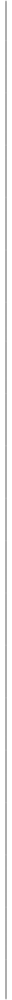
次元観察子ψ １〜ψ ２
空間と時間がただ存在する場
次元観察子ψ ３〜ψ ４
一つのモノを中心に形成される場
次元観察子ψ ５〜ψ ６
無数のモノと、一つの身体を中心に形成される場
次元観察子ψ ７〜ψ ８
無数の身体を中心に形成される場
次元観察子ψ ９〜ψ １０
上位概念。言語の場と、感覚の場。
『ψ １〜ψ ２』の「空間と時間がただ存在する場」から、『ψ ７〜ψ ８』の「無数の身体を中心に形成される場」 までで、『人間の元止揚』 と呼ばれて一まとめになるが、『次元観察子』の全体像を掴む場合は、以上のイメージが出来ていると良い。
『次元観察子』のψ １，３，５，７・・・といった「奇数系」 は自己化 を深める流れであり、精神世界 寄りの方向性である。これは『ノウス（ＮＯＯＳ）』 と呼ばれる。
一方で、『次元観察子』のψ ２，４，６，８・・・といった「偶数系」 は他者化 を深める流れであり、物質世界 寄りの方向性である。これは『ノス（ＮＯＳ）』 と呼ばれる。
そうした中で、『ψ １〜ψ ２』までが「意識の世界」であり、『ψ ３〜ψ ４』からが「無意識の世界」と呼んで良いものだが、この「無意識の世界」を開いて『顕在化』 させていくのが「奇数系」である『ノウス（ＮＯＯＳ）』の流れである。
また、『奇数系観察子』と『偶数系観察子』は、『ψ １〜ψ １０』までであると、以下のような要素と対応している。
奇数系
次元観察子ψ １： 空間
次元観察子ψ ３： 主体
次元観察子ψ ５： 自己
次元観察子ψ ７： 意識進化
次元観察子ψ ９（思形）： 言語
偶数系
次元観察子ψ ２： 時間
次元観察子ψ ４： 客体
次元観察子ψ ６： 他者・自我
次元観察子ψ ８： 時空
次元観察子ψ １０（感性）： 感覚
以上ような「階層構造」と、それから「奇数系」と「偶数系」の流れの違いというのも、イメージできるようになると良い。
『次元観察子』は以下のような『ケイブコンパス』 という図にまとめて記述される。
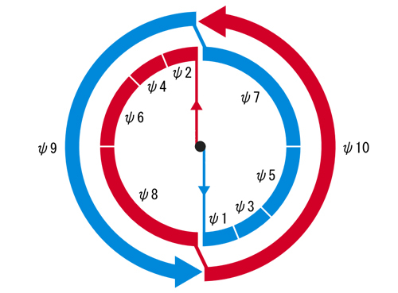
この中で、『次元観察子ψ
１〜ψ
８』は『元止揚』
と呼ばれるわけだが、それぞれ、右側にある『奇数系元止揚』
と、左側にある『偶数系元止揚』
とで分かれている。それから、『次元観察子ψ
９』は『思形』
、『次元観察子ψ
１０』は『感性』
と呼ばれる。
それぞれをざっくり説明すると、『奇数系元止揚』は「精神世界」 であり、『偶数系元止揚』は「物質世界」 に該当する。それから、『思形』は「言語の世界」 であり、『感性』は「感覚の世界」 である。
人間の世界においては、『思形』は「物質世界」 を裏で支えていて、『感性』は「精神世界」 を裏で支える構造になっている。しかし、それぞれは本来、奇数系観察子・偶数系観察子であるため、奇数系（思形）が精神世界を支え、偶数系（感性）が物質世界を支える・・・という、逆の力も持っている。
『次元観察子』は、つけ加えると『次元観察子ψ １１』や『次元観察子ψ １２』もある。さらには『次元観察子ψ １３』や『次元観察子ψ １４』もあるが、本書ではあまり引用しないため、その説明は省略する。
ここからは、「精神分析」の本論に入ることになる。まず、「カール・Ｇ・ユング」 の心理学である「ユング心理学」 についてである。これは「分析心理学」 とも言われている。
まずは「カール・Ｇ・ユング」
とはどういう人物か？について述べていく。
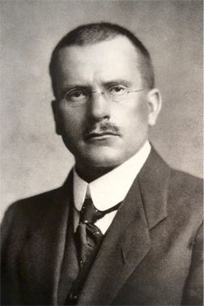
ユングは、１８７５年にスイスで生まれ、死没は１９６１年である。精神科医という立場でありながら、霊能現象やオカルトといったものに関心を持っていた人物であり、オカルティストを兼ねた心理学者として有名である。ユングは、幼少期から不思議な夢をみたりしていて、そのような不思議な体験から、心理学や無意識への関心を持つという、不思議体験を色々と持っていた人らしい。
精神科医として、患者の抑圧した感情に興味を持ち、「夢分析」を用いていたユングは、同じく「無意識」の研究の先駆者だった「ジークムント・フロイト」
に着目する。そこで、１９０７年に初めて会うようになり、年齢的には19
歳年上のフロイトと意気投合する。
しかし、フロイトは「リビドー（性的欲望）こそが全ての精神病の原因である」という、極端なことを主張する人物であった上、ユングは、オカルト現象や霊的現象に関心の強い人物だったため、そういうものに否定的であったフロイトにとっては、その点については快く思わなかった。
フロイトから「国際精神分析協会」の会長という重要なポストを任されていた身であったユングだが、その思想の違いから、次第にハッキリと決別するようになり、ユングは独立して行動するようになる。
こうしたユングとフロイトの決別は、お互いにとってショックが大きく、ユングはこの出来事を機に統合失調症を発症するようになる。しかし、ユングはここで自身に起きた精神の分裂現象は、自分自身が向上するためのものだと捉えて、自身を分析するようになる。
ユングはこのような経緯がある中で、人間の無意識には、自己と他者同士で繋がった領域があるという「集合無意識」 といった概念を提唱したりする。これは科学的には受け入れ難い、突拍子もない考え方だが、こうした発想を持つ所が、ユングがオカルティストと呼ばれる理由でもある。
また、ユングは、西洋の思想にはない、東洋の思想に着目していた人物である。西洋が正しいと論ずる「近代理性」や「キリスト教」的な考え方を疑問に思い、東洋や南アフリカといった、自然と共に暮らす考え方を持つ民族に関心を持った。それから、精神分裂の統合の象徴として「曼荼羅（マンダラ）」を導入したりし、自身も様々なマンダラを描いたりする。
このようなユングの思想は、後にアメリカのヒッピーやニューエイジといった人達にも人気が出ることになり、後世でヒッピーカルチャーに影響を与えた人物としてもよく名前が上がる。
今度は現代日本の話になるが、現代日本にてユングを理解するにおいて、日本のユング派カウンセラーであった「河合隼雄」 さんの影響は大きいと思う。
まず、ユングの言っていることには特有の難解さがある。書籍が分厚かったりもするし、オカルトが絡んでいることや、夢分析といった手段を用いていることから、ユング心理学を学ぶとなると、それなりに難しさをともなう。
しかし、そうした中でもかなり分かりやすいユング心理学の入門書を書き、学びやすいようにしているのが、河合隼雄さんである。
河合隼雄さんは、元々は数学教師の道を歩むはずの人であったが、それよりもカウンセリングの道に関心を持つようになり、スイスに留学して、本場でユング心理学を学んで、ユング派の精神分析家としての資格を取った人である。
河合隼雄さんは、長いカウンセリング経験を兼ねつつも、ユング心理学を独自に噛み砕いて自分のものにしているため、その書籍も分かりやすい。河合隼雄さんのユングは、およそ「河合隼雄流ユング心理学」 となっているのであるが、その心理学のクオリティが高いのだと言っても良い。
ユング心理学を学ぶ場合は、ユングを直接読むよりも、河合隼雄さんが噛み砕いたユング心理学を理解した方が、はるかにやりやすいだろうと思う。いわば、「仏教」の原典としては「ゴータマ・シッダルタ（釈迦）」の言ったことにあるが、それよりも、日本の仏教僧で有名な人から仏教を教わった方が良いようなものだと思う。
河合隼雄さんの著作は「心理学」以外のものも多く、「心理学」の枠を越えて様々なことを考えていた人物でもあり、それを読んでいくだけでも面白いので、そうしたものもオススメである。
ここで、ユングを理解するために、筆者的にオススメの文献を挙げておく。
まずは、河合隼雄さんの『ユング心理学入門』 である。凄くよくまとまっているため、これ一冊でもほとんどの概要が分かるようになっている。
それから、入門向けの本を読んだ後は、ユングの原書を押さえておきたい・・・ということで、ユングの書いた『自我と無意識』 という本がある。この本は、ユングの原書にしては、ユング心理学の主要概念がコンパクトにまとまっている本である。しかし、読みやすい本でもない・・・とはいったものの、ユングの原書ということで、カウンセリングの実践経験が豊富な人の書いた本でもあるため、読み応えのある本である。
ユングについて、基本概念を押さえることを目的とするならば、この二冊だけでも十分だと思う。どちらも文庫サイズが出ているので手に取りやすく、これだけでもかなり広範囲の概念を押さえることができる。
本書も、この二つに書いてあることをベースにして、用語の解説をしていくので、合わせて読むことで、理解を深めていってもらいたい。本書では、「具体例」のような事項は極力省いて説明しているが、『ユング心理学入門』には具体例などが詳しく書かれているため、気になった場合は参照してみて欲しい。
ユングに関しては、覚えるべき概念の数というのは、そこまで多くはないと思う。あとは、自身の「内在」や「無意識」といったものと、自分と世の中との関わり方など、そういったテーマとどこまで向き合えるか・・・だと思う。
さて、いよいよユング心理学の内容に入ろうと思う。まずは、「元型論」 に関する所からである。
本書は、ヌーソロジーの概念と絡めて書くことが目的である。従って、まずは「普通に解説」を書き、そこから「ヌーソロジー的に何が言えるか？」を書くという構成で説明していくことにする。
ここでは、河合隼雄さんの『ユング心理学入門』を主な参考文献としているので、合わせて読んでみると良いと思う。
まずは「元型」 という概念についてである。
ユングの「元型」については、「集合無意識」 という概念と合わせて述べられる。
ユングが様々な患者の夢を分析していると、その患者の中には、個人的な「無意識」を超えた、普遍的な「無意識」から発しているようなものが見えた。このように、人類同士で共通して持っている無意識を「集合無意識」 と呼んだ。
次に、このような「集合無意識」から発しているものの中で、共通の「型」 が見られたので、それを「元型」と呼んだ。この「元型」は、それぞれの文化に伝わっている、神話や童話や言い伝えにも通じていると言えるものである。
ちなみに、「元型」そのものは、「集合無意識」にある「型」に該当するため、それは顕在意識として現れることはない。「元型」が元になって意識に現れる心像が『原始心像』 と呼ばれるという仕組みになっている。
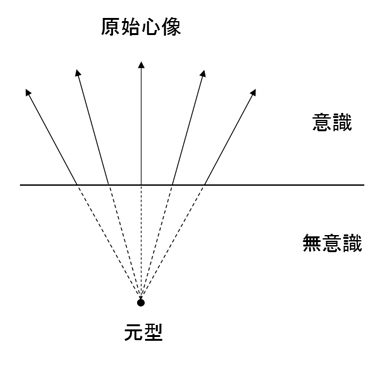
書籍『ユング心理学入門』によると、ユングが元型として取り上げたもののうち、特に重要なものが、「シャドウ（影）」「ペルソナ」「アニマ」「アニムス」「自己」「大母」「老賢者」 と名付けられるものである。従って、本書でも、これらについての解説を試みる。
ヌーソロジー的には？
ヌーソロジーは、いわば「精神構造」を明らかにする宇宙論であり、「具体的イデア論」 とも呼ばれるものである。ここで明らかする「精神構造」は人類普遍として通じているものであり、それは『元型』とも言えるものだと思う。
ヌーソロジーの『次元観察子』や『大系観察子』といったものは、まさしくそのようなものである。
この中で、『次元観察子』は、人間の世界に近いものであり、「人間の世界にある空間の構造」から導き出される「精神構造」が『次元観察子』の世界である。この構造は、ユングの『元型』とも紐づけて解釈することができる。
それから、『次元観察子』よりも上位にある、「神話」の世界にある構造を表しているのが『大系観察子』と捉えると良い。こちらは、具体的に理解することは難しいが、「神話」のように人類の背後にあるものとして捉えておくと良い。
ヌーソロジーは「具体的イデア論」と呼ばれ、『次元観察子』の内容を具体的に解き明かしているが、これは、ユングの『元型』を具体的に解き明かす ことにも繋がっていくようにもなる。
次に、元型の一種である「シャドウ」 について説明する。
「シャドウ」は簡単に言うと「普段の自分があまり見ていない自分」 という意味で良いだろうと思う。書籍『ユング心理学入門』でも、「その個人によって生きられなかった半面、その個人が形容しがたいとしている心的内容であり、それは文字どおり、そのひとの暗い影の部分をなしている。」・・・という説明がされている。
人間は、生きている際には「これが正しい」という価値体系を持って生きているため、そこから抑圧された価値観や感情というのが必ず存在することになる。
自分が普段持っている表面的な価値観が「善」で「光」に満ちあふれているほど、その逆である「影」は、「悪」で「暗い」ように感じるものである。逆に、表面的な価値観を、さほど「善」だと思わなければ、「影」はさほど「悪」という風には感じない。「シャドウ」にはそうした性質がある。
普段の正義感が強ければ強いほど、自分の中の「嫌な部分」として感じるようになる「シャドウ」だが、人間が無意識の世界に向かう場合、必ず出てくる元型でもある。また、それは無意識にある自分の姿の現れであるので、それと向き合うことで、自分の「本性」が分かってくる道が開けるようにもなる。
人間が「シャドウ」を持つことで起こり得る展開として、まず「他者投影」 というのがある。ある時、自分の身近な人物、あるいは、目に触れた人物の「嫌な部分」を見て、非常に「嫌な感じ」を受けることがある。それは、あたかもその他人が悪いかのような印象を受けて、自分はその他人を批判するようになったりするし、状況が悪い場合は攻撃するようにもなってしまう。しかし、よくよく見てみると、その「嫌な部分」は、自分が持っている「嫌な部分」なのである。つまり、自分が他人に対して批判していたと思われたことは、自分が自分の「嫌な部分」に対して、他人に投影して批判していたのである。このように、「シャドウ」は「他人に投影される」という性質を持つ。
一方で、人間が「シャドウ」を持っている場合で起こりうることとして、それを受け入れ、「受容」する道というのもある。精神分析においては、どちらかというとその道が望ましい。先ほども言った通り、「シャドウ」が「悪」のように見える時というのは、「普段の価値観」が持っている正義感が強く、「善」に対するこだわりが強い場合である。また、本来は自分が認めるべき「劣性」の部分は、他人の中にあるものではなく、自分の中にあるものだと認識するべきである。そうしたものは、自分の内部にあると認めた上で、上手いこと付き合っていく必要がある。
このような「シャドウ」の「受容」は、言うのは簡単かもしれないが・・・実際に行うのは難しいかもしれない。しかし、精神分析において目指すべきこととして、気長に構えてでも上手くやりたい所だと思う。
ヌーソロジー的には？
まず、ヌーソロジー的には、普段の人間の意識は、『次元観察子ψ １〜ψ ２』 にある。そこから、『次元観察子ψ ３』や『人間の外面』に向かう 際、無意識の世界に参入するため、「シャドウ」が出てくることになる。
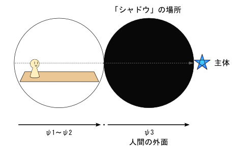
『次元観察子ψ ３』のある場所である『人間の外面』は、「夜」のようなイメージのものであるため、このイメージが「シャドウ」のイメージとも合致している。「シャドウ」は、世間で正しいとされている価値観のものとは、逆の価値観を持っている。しかし、先ほども言った通り、悪いものかどうかは別問題であり、その逆である『次元観察子ψ ４』や『人間の内面』に対して、「善」や「光」や「正義」といった観念が強い場合、その逆の「影」が一層と濃くなる。
つまり、ヌーソロジー的に『ノウス（ＮＯＯＳ）』の方向に向かい、『次元観察子ψ ３』を発見することにより、「影のように見えるもの」が出てきた場合、それは「シャドウ」だと言うことができると思う。
こうした「シャドウ」に対して「他者投影」を行い、他人に対して攻撃ばかりすることは、自身の無意識と向き合うことと避ける行為である。これは、ヌーソロジーで目指すべき道と逆方向に行っていると言っても良い。ここで目指すべきことは、「シャドウ」の「受容」であり、それが『顕在化』や「自己発見」の道にも通じている。実は、この「受容」こそが、ヌーソロジーで言われている『等化』 の道とも通じている。これが分かるようになると、ヌーソロジーに必要な問題は「イデアの認識」といった無機質な問題ではなく、「こころの問題」だということが分かってくるのである。
また、ここでの「シャドウ」は、ヌーソロジーの『顕在化』において初期の段階で出てくるものだと思う。より突き詰めてみると、「シャドウ」という元型は、後述する「こころ」という元型や、「アニマ・アニムス」といった元型とも通じているということが分かってくる。
「ペルソナ」 は「仮面」 という意味の元型である。
それは、簡単に説明するならば、「外的環境に適応した自分」や「常識を守る自分」だと言えるものである。男性であるならば「男性らしく」しており、女性であるならば「女性らしく」している。
我々が「普段の自分」を演じる時は、およそ無意識的にそれをやっている所があるので、無意識の構成要素である「元型」として扱われる。我々が普段、自分が自分だと思っている「自我」 に、「ペルソナ」が宿っているものが、普段の自分だと言うことができると思う。
「普段の自分」を表す「ペルソナ」は、人間が生きていくにおいて必要なものである。例えば、仕事をして生きていく場合においては、「仕事をする自分」としての「ペルソナ」を演じ続ける必要がある。これは必要なことではあるが、同時に「ペルソナ」が自分の全てだという価値観に覆われるようになると、「そうでない自分」というのを無意識に抑圧するようになる。そこで抑圧されたものとしていずれ出てくるのが、それとは逆の概念であり、それが「精神分析」のジャンルで探求されるものである。
このように、「外的な環境」に向かっていて、普段の自分を形成している元型が「ペルソナ」である。
ヌーソロジー的には？
「ペルソナ」は、ヌーソロジー的には『偶数型元止揚』全体 に対応している。
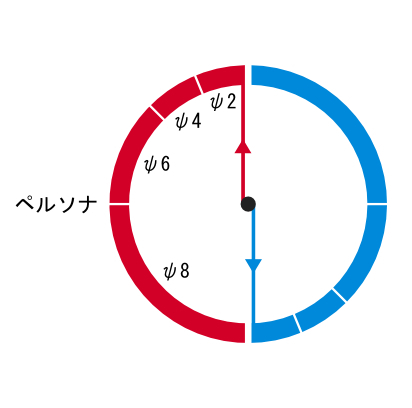
ヌーソロジーの『偶数型元止揚』は「物質世界」を構成しているものに該当するため、これは、「物質世界を生きるため自分」 だということもできる。そして、ヌーソロジーの概念に当てはめて考えると、「ペルソナ」にはψ ２〜ψ ８という階層構造があると捉えることができる。
ちなみに、自分の書いた『Raimuのヌーソロジー入門』での解説では、「ペルソナ」と「シャドウ」を対立した存在 として書いているが、これは、『次元観察子ψ ３〜ψ ４』の段階において、ψ ４段階の「ペルソナ」と、ψ ３段階の「シャドウに見えるもの」が大事だからである。
ここで、「シャドウ」を受容し、「ペルソナ」を使いこなすことが、次のステップに進むことに通じており、『等化』をすることにも通じている。
『偶数型元止揚』である「ペルソナ」は、「ψ ４→ψ ６→ψ ８」という風に発展していくものであるが、これは、「客体（コミュニティに生きること）→他者（組織・団体に生きること）→時空（概念に生きること）」という発展でもあるため、そのような発展構造や階層構造が見えてくるようになると良い。
「こころ」 は、ユングが「Seele」と読んだ概念であり、我々が「心」とか「魂」とか読んでいるものを、ユングが明確に定義づけしたものである。
「Seele」は、英語では「Soul（魂）」と訳されているが、河合隼雄さんは書籍『ユング心理学入門』で、「こころ」と訳しているため、ここでもそのように呼ぶことにする。これは、後述する「アニマ」や「アニムス」といった元型に発展するものでもある。
「こころ」は、簡単に説明すると、「自分自身が内的に持っているもの」 である。それは、自身の外在の世界に向かうものと対立し、無意識の世界へと向かうように機能している。先ほどの「ペルソナ」は「外的な態度」の元型であるのに対して、「こころ」は「内的な態度」の元型である。
元型としての「こころ」は、意識的に把握することはできないが、心像として、夢の中に現れることがある。その中の女性像を、ユングは「アニマ」と呼んでいる。従って、「こころ」と「アニマ」は、夢に現れてくる場合は、ほとんど同義語として扱われている。
「アニマ」や「アニムス」について、詳しくは後述するが、「こころ」は、そのベースとなるものである。
ヌーソロジー的には？
「こころ」は、ヌーソロジー的には『奇数系元止揚』全体 に位置づけるのが良いと思う。それは、『偶数系元止揚』である「ペルソナ」とは、『対化』の関係を持っている。『奇数系元止揚』は「精神世界」を構成しているものなので、「精神世界」にあるものだとも言える。
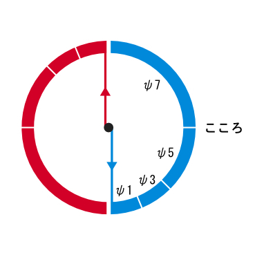
これは、「精神世界を生きるための自分」だとも言うことができる。それから、ヌーソロジーの観察子構造から判断するに、「ペルソナ」に階層構造があるように、「こころ」にも階層構造があると解釈できる。
ヌーソロジー的に意識を『顕在化』させていくにおいて、まずは、『次元観察子ψ ３〜ψ ４』が問題になるため、『次元観察子ψ ３』が一番始めに出てくる「こころ」である。これが、暗い「影」のように見えた場合は、「シャドウ」となっていると思う。しかし、「シャドウ」の裏には「こころ」があり、暗い影のようなものの中にも、「こころ」のようなものを発見することが、まずは大事なこととなる。
『奇数系元止揚』である「こころ」は、「ψ ３→ψ ５→ψ ７」という風に発展していくものであるが、これは、「主体（脱コミュニティ・哲学的な探求）→自己（自己発見）→意識進化（概念の意識に参入）」という発展でもあるため、そのような発展構造や階層構造が見えてくるようになると良い。これは、それぞれ「ペルソナ」にあるものと『対化』の関係を持っている。
次に「アニマ」 と「アニムス」 についてである。
簡単な解説では、「アニマ」は「人間を無意識の世界へ引き連れる女性性」 であり、「アニムス」は「人間を無意識世界へ引き連れる男性性」 という風に説明できるが、これは結構深い意味も持っている。
「アニマ」と「アニムス」の本性は、先ほども言った通り「こころ」であり、「自分自身が内在に持っているもの」である。それが夢の世界で、女性として現れた場合は「アニマ」で、男性として現れた場合は「アニムス」となる。
そして、一般的には、実際の性別が「男性」の場合は、女性である「アニマ」 が登場し、「女性」の場合は、男性である「アニムス」 が登場する。普段の自分と逆の性がそこで登場するということである。これは、「ペルソナ」が「男性らしいか女性らしいか」という側面が濃ければ濃いほど、その傾向は強いと思われる。
「こころ」の派生物である「アニマ・アニムス」は、「ペルソナ」に対するものとして現れる。「ペルソナ」は得てして「物質的な安定」を求めるものだが、「アニマ・アニムス」は、その逆として出てくるため、いくらか反社会的な性質も持っている。「精神病」の発症もその性質の一つだが、「アニマ・アニムス」の発する警告は、自身のペルソナ的側面が、ある種の偏りがあった場合に出てくるものである。それは、自分個人が偏った性質を持った時に出てくるものであったり、家族全体が偏った性質を持った時に出てくるものであったり、社会全体が偏った性質を持った時に出てくるものであったり、さらには、人類全体が偏った性質を持った時に出てくるものでもある。自分個人の「無意識」の問題から始まるものでも、それは、人類普遍の「集合無意識」に通じる問題になっていることもある。
このような「アニマ・アニムス」は、「世間全体に対抗するもの」として現れることもある。例えば、父権性が強すぎる社会の場合は、総じて「アニマ」が発生することが多くなり、逆に、母権性が強すぎる社会の場合は、総じて「アニムス」が発生することが多くなる。このような「強い無意識の力」を持っているものが、「アニマ」と「アニムス」である。
社会全体からの視点でいうと「アニマ・アニムス」は、「目に見えない存在」と結びついている傾向にある。人間の世界は「目に見えるもの」が主流として君臨しているため、人間社会において「目に見えない存在」は劣性として、無意識の世界に抑圧されやすい。そうした抑圧観念が、「アニマ・アニムス」と結びついていくのである。現代社会において主流な、科学的な価値観や唯物的な価値観は、主に「男性性」として象徴される。従って、「目に見えない存在」と「アニマ」という女性イメージが結びついたものは、現代社会において重要なポジションとなる。
このように反社会的で強い無意識の力を持った「アニマ・アニムス」だが、書籍『ユング心理学入門』を引用すると、ユングは「アニマ」に関しては、以下のように述べたらしい。
「一般には、男性としての強さや判断力などがまず期待されるので、このような外的な期待にそえるペルソナを作り上げることが大切であり、このようなペルソナを人生の前半において築いた後に、アニマの問題との対決は人生の後半（三十五〜四十歳以後）になされるのが普通である。」
「ただ、例外として、芸術家、宗教家や、前述したように心理療法家なども、若いときからアニマの問題と取り組まねばならぬ宿命を背負った特殊な人であると思われる。」
・・・と、このように、それだけ自身を揺るがす力を持っているのが「アニマ・アニムス」だということである。
ヌーソロジー的には？
ヌーソロジー的に「アニマ」と「アニムス」は何なのかというと、それは「こころ」とほぼ同様で『奇数系元止揚』 から出てくるものである。「アニマ・アニムス」は、そこに異性イメージが加わったものということで、ひとまずは良いと思う。
「こころ」に階層構造があるように、「アニマ・アニムス」にも階層構造がある。「アニマ」の女性像と、「アニムス」の男性像は、階層構造によって変化するものだと捉えても良い。
それから、「アニマ」は「女性性」、「アニムス」は「男性性」とそれぞれ関わりがあるため、ヌーソロジー的には『感性』と『思形』 に関わりがあることも考えられる。ユングの説明において「アニマが単一人格であるのに対して、アニムスは複数である」といったことが述べられている。この点はなかなか難解な所だが、女性の意識的態度は、男性よりも個人的なものだという指摘から来ていて、女性は「家族」といったコミュニティを重視しつつも、本質的には自分たち自身にしか興味を持っていないと言う。対して、男性は、国家であったり、民族であったり、企業集団といったものに関心が強く、普遍的なものに興味を持つ（これはあくまでユングの見解であるが・・・）。こうした性質の違いも、『感性』と『思形』の性質の違いであるため、「アニマ」と「アニムス」にはこのような違いがあることも踏まえておくと良い。
次は「自己（Self）」 という元型についてである。ユングは、精神分析の目的として「個性化」 というものを設定しているが、この「個性化」というのは、言い換えると「自己実現」 とも言えるため、この「自己」という元型はその中心となる。精神分析的にも、「自己発見」や「自己認識」というと、この「自己」を発見したり、認識したりすることだと言っても良い。
まず、我々の意識は、普段は「自我（ego）」 を中心として動いていて、それが人格の中心だと思って生きている。
しかし、精神分析においては、無意識を含めるとそれよりも奥の意識というのがあり、その中には自我を超えた「高次元」であったりと、「高次の全体性」と呼べるようなものがある。無意識世界に踏み入れようとする時、「自我」の安定性を崩してまで、高次の全体性へと向かう動きが、人間の心の中には見られるのである。
人間が、こうした「自我」に留まった状態から、無意識の世界に参入し、高次の全体性に向かうようする ことを、ユングは「個性化」や「自己実現」と読んだ。そして、これが人生の究極の目的であり、心理療法の目的でもあるとした。
そうした中で、高次の全体性への統合へと向かう、通常の意識を超えた動きの中心として、ユングは「自己」というものを考えた。「自我」が意識の中心であるのに対して、「自己」は意識と無意識とを含んだ心の全体性であると説明されている。
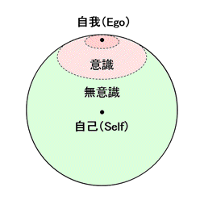
ユングの「自己」という考え方は、東洋思想の影響を受けており、中国の「道（タオ）」の考え方にも影響を受けている。意識と無意識は、相対する陰と陽の動きのように、意識の世界も大事でありながら、無意識の動きも大事であり、この両者の動きが分かったとき、われわれの全人格の中心は、「自我」ではなく「自己」であることを知ると言う。
また、こうした「意識」と「無意識」の関係は、西洋の近代理性と東洋の無為自然の思想にも通じているため、「自己」の発見は、西洋思想と東洋思想の二つの思想の落とし処だとも言うことができる。
先ほど述べた元型との絡みで言うと、「自己」は、「ペルソナ」と「こころ」（あるいはシャドウ）を「統合」するようなポジションにもあたる。
ここでいう「統合」とは、「錬金術」 的な発想のものである。ユングは錬金術の研究をしていたことでも有名であり、その発想を精神分析の世界に取り入れている。相反するものを炎にくべて、熱の中で変容を起こし、新たな生成物を作り出すイメージ・・・これは、先ほどの「道（タオ）」のイメージにも近く、そのように生まれたものが「自己」であり、それは最終的には「金（Gold）」の錬成へと向かうということになる。
このような「自己実現」は、人間にとっての究極の目標にも通じていることだが、これには注意点もある。それについては『自己実現の道の危険性について』 の項目にて述べる。
ヌーソロジー的には？
ユング的な「自己（Self）」は、ヌーソロジー的には何に該当するのかというと、『次元観察子ψ ５』 の位置にあるものとするのが良いと思う。
ヌーソロジーの情報元であるオコツトも「『次元観察子ψ ５』とは「自己」の有り所」だと言っている。ここで言う「自己」は、ユングの言う「自己（Self）」と、ほとんど同じものだと言っても良い。
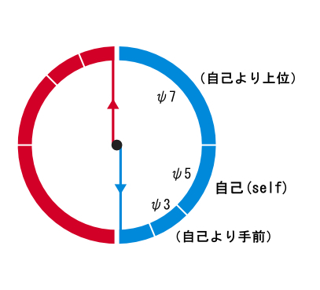
ヌーソロジーにおいて『次元観察子ψ ５』は、人間の意識を『ノウス（ＮＯＯＳ）』側に引っ張る力を持っており、それは、「自他分離状態における最高位」の「自分」だと言うことができる。
それから、『次元観察子ψ ５』は、『次元観察子ψ １〜ψ １２』においては、丁度「中心」ぐらいのポジションにあたる。（ちなみに、ψ １〜ψ １４においては、ψ ７が中心になる・・・というポイントも少し重要である。）
また、『次元観察子ψ ５』は、『次元観察子ψ ３』と『次元観察子ψ ４』の『等化』で分かる箇所でもある。観察子全体においては、『次元観察子ψ ５』より高次元のものはまだまだあるものの、そのポイントは人間の世界にも近く、「自己」と「他者」の関係性で世の中を生きるにおいて、重要なポジションである。
ユングの「自己」という元型についてはまだ語ることがある。それは、「自己実現」の道の危険性 についてである。この危険性は「自己実現」に向かう人の心が、まだまだ未熟である場合に起きることである。
まず、心が未熟である者が、「自己」を理解して、その感覚を実感した時、その偉大さに埋没してしまうことがある。その結果、偉大である「自己」に従い、それと自分が同一であるかのように行動をしていくが、その時に自分が「自己」だと思っていたものは、実は「自我」が膨大に膨れ上がっただけのものだという、「自我肥大」 という現象が起きてしまうのである。
また、「自己実現」の道に向かうにおいては、「無意識」の重要性だけでなく、「意識」の重要性も忘れてはならない。「無意識」の世界に参入すると、「無意識」の存在感の強さを実感することになるが、逆に意識が優勢である普段の価値観の反発もあり、今度は、無意識の世界が重要という価値観を持ち、意識の世界の重要性が抜けてしまうことがある。東洋思想においても、「無意識」を重視している興味深い所が見られる一方で、むしろ「意識」の重要性が欠けている所も見られる。
そのため、「人間はまず自我を十分に強化し、無意識に対して埋没することなく対峙できるようになってから、自己実現の道に入るべき」・・・ということをユングは言っている。これは、先ほど述べた「アニマとの対峙は人生の後半（三十五〜四十歳以後）から」ということにも通じていると思う。
それから、普通の人が「自己実現」の道に入ろうとすると、そこで「一般的に信じられている価値観」というものを捨てるようなことも起きてくる。人によっては、そこでショックが起きることでもある。これは、「ペルソナ」に対する、「シャドウ」や「アニマ」の驚異であり、無意識にある元型との対峙の際に出てくることである。
このように、「自己実現」の道はユングが指し示している目標であるが、決して簡単な道ではないことも、踏まえておくべきことである。
ヌーソロジー的には？
「自己実現の道の危険性」は、ヌーソロジーにもそのまま通じていることである。
ヌーソロジーの構造は、ある意味でシンプルな所があり、着実に理解をしたい場合は、「数字が少ない所から理解をするべき」 という鉄則がある。ここで言う「数字が少ない所」というのは、ψ １とかψ ３といった所のことである。逆に、ψ ９やψ １１といった、「数字を高い」所を掴むと全体のイメージが掴めるため、それはそれで良いこともあるが、しかし、やはりちゃんと『顕在化』というレベルでしっかりと理解するつもりの場合 は、少ない方から基盤を固めるのが基本だと思う。まずは、『次元観察子』の「ψ １〜ψ ２」から「ψ ３〜ψ ４」にかけてである。
ヌーソロジーの『観察子』は、数字が少ない所の方が人間の世界に近いため、実感を含めた理解がしやすい所である。・・・しかし、人間の世界に近い所ほど、人間の「影」にも近いため、目をそむけたい所でもある。それは、「シャドウ」の問題が絡む所であるため、普通の人が避けたがる理由はそこにあると思う。
もし、『観察子』の数字を飛ばして分かろうとした時、下手するとどうなるのか？ そうすると『迷化』 という現象が起きるようになる。『迷化』とは、その存在の構造がハッキリ分からない状態なのにも関わらず、「分かったつもり」と盲信した状態に落とし込むと、それは、進化の方向性とは真逆の方向性となってしまう ことをいう。
『迷化』は、「宗教」の世界でよく起きていたことである。キリスト一神教的な「神」を追い求めるあまり、自身を「神」と同一視したり、あるいは、誰かを「神」と同一視してしまうことは、「神」が何なのかを分かっていないにも関わらず盲信した結果であるため、ここでも『迷化』現象が起きていると言っても良い。
これは、『次元観察子ψ １〜ψ ４』をいきなり飛ばして、『次元観察子ψ ５』を理解しようとする場合でも起こりえるし、より高い次元を理解しようとすると、余計にそうなってしまうことでもある。より高次元を妄信している傾向が強いほど、問題は深刻となっていると言える。
ヌーソロジーの『次元観察子』とユング心理学との対応において、『ψ １〜ψ ２』は「自我」の理解、『ψ ３』は「シャドウ」と「こころ」の理解、『ψ ４』は「ペルソナ」の理解に通じている。従って、『ψ １〜ψ ２』に依存ずる価値観を捨てることや、『ψ ３〜ψ ４』の双方の価値を認める問題は、ヌーソロジーの理解を進めているうちに必然的に発生する、心の問題でもある。
つまり、ヌーソロジー的には、自己実現の道の注意点は、『次元観察子』の『ψ １〜ψ ２』→『ψ ３〜ψ ４』の認識と理解を地道にやるべきだということに、そのまま通じているのである。
「トリックスター」 は書籍『ユング心理学入門』には詳しく書いていない元型だが、少し印象的な元型であるため、ここで取り上げることにする。
「トリックスター」は、既存の法や価値観を引っかきまわすような、いたずら好きの元型として伝えられるものである。「トリックスター」の特徴として言われていることは、いたずら好きであること、既成の法や聖なる物をひっかきまわすこと、半獣のような側面を持つこと、愚か者かのように見える一面があること・・・などである。それは、人間を超越した能力を持っている一方で、動物以下のような愚かさを持っている元型である。
このような「トリックスター」は、状況をひっかき回して周りを混乱させるが、そこから良い結果になることが多く、救世主や英雄に転じる場合もある。
日本神話では「スサノオ」 が「トリックスター」の代表として挙げられる。それは、「荒ぶる神」であり、「タカマノハラ」で暴れ回ったかと思えば、人間の世界に降りて、ヤマタノオロチを倒すような、英雄的な一面も見せる神様である。
ヌーソロジー的には？
「トリックスター」をヌーソロジー的に解釈するのは意外と難しいが、ひとまず、神話におけるそれは『プレアデス』的なもの と捉えると良いかもしれない。
それから、神秘家の「ルドルフ・シュタイナー」が「ルシフェル的なもの」 と読んでいるものが、ヌーソロジー的には、『性質』と『反性質』の二面性を持つ ものと解釈することができるものであり、「トリックスター」もそれと似たようなものと解釈することができる。
「トリックスター」は『プレアデス』的であると同時に、人間を超えているような性質も持ち合わせている。そうした英雄としての側面は、ある意味では『シリウス』に対する志向性とも解釈できると思う。
ここで、「大母（グレートマザー）」 と「老賢者」 という元型についても軽くふれておこうと思う。
「大母」は、夢の中に出てくる、偉大な「母なるもの」のイメージである。特徴としては、全てを受容し、あらゆる生命を生み出す偉大さを持っている反面、全てをのみこむような恐ろしさを持っているものである。
一方で、「老賢者」は、「知恵を持った老いた賢者」のイメージである。特徴としては、理性の象徴とも言えるような高い知能を持ち、その力で人々を導いたりする。
この二つは、それぞれ「母性原理」と「父性原理」の象徴 ともされる。しかし、この二つは「夢にそのようなイメージ」が出てくると、そう認識されるようになるが、その夢において、それが何であるか？については、多様な解釈ができることもあるかもしれない。その正体を見極めるためには、どういう役割を持っている者なのかを見極める必要がある。
ヌーソロジー的には？
「大母」と「老賢者」は、夢に出てきた場合は、定まった解釈のし難い元型であるため、ヌーソロジー的な解釈は、内容次第で変化するかもしれない。しかし、「大母」が「母性原理」の象徴を、「老賢者」が「父性原理」の象徴を表している場合は、それぞれ「大母」は『感性』、「老賢者」は『思形』 が関係していると思われる。『次元観察子』というよりかは、神話の次元にあるものとして捉えるなら、『大系観察子』の Ω １０（感性） と Ω ９（思形） と捉えた方が良いかもしれない。『感性』は母親としての役割を持つ側面があり、『思形』は知恵を与える側面がある。
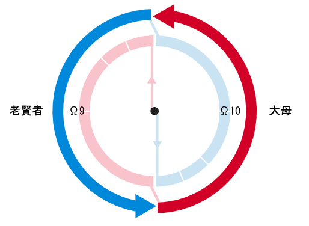
しかし、解釈によっては、「母なる地球」としての「大母」は、『プレアデス』という存在の象徴として出てくることもあるかもしれない。
それから、「師」としての「老賢者」は、「自己（Self）」や「アニムス」に近く、『次元観察子』のψ ３，ψ ５，ψ ７に紐づいた何かしらの存在が「老賢者」として現れることがあるかもしれないし、「超越者」としての「老賢者」は、『オリオン』的な存在が当てはまるかもしれない。そのあたりのケースは色々と想定できる所である。
「父性原理」 と「母性原理」 というのは、ユングの元型というよりかは、河合隼雄さんが言っていた二つの原理である。
「父性原理」と「母性原理」は、書籍『ユング心理学入門』では触れられていないが、河合隼雄さんの別の書籍『子どもと学校（岩波新書）』 などに書かれている。それから、『父性原理と母性原理 (河合隼雄全対話)』 という書籍も出ている。
書籍『子どもと学校』から引用すると、河合隼雄さんが言っていた「父性原理」と「母性原理」は、それぞれ以下の性質を持っている。
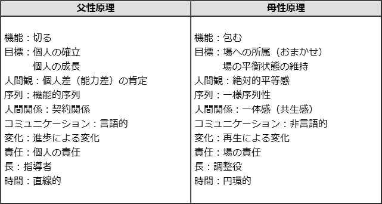
河合隼雄さんは、元々は数学教師の免許を持っている理系の人であるため、こういう二元論的な分析を好む人でもあった。
筆者は、ヌーソロジーをやる前は、こうした二元論を考察するのが好きだったため、「父性原理」と「母性原理」といった二つの原理は、非常に気になる概念であった。
ここで、河合隼雄さんが述べていたことを簡単に説明すると、日本は本来、「母性原理」が強い国であったが、戦後のグローバリゼーションの流れによって、欧米の文化を輸入しているうちに、「父性原理」的な考え方も多く輸入することになった。そして、頭で考えたりする時は、父性原理にもとづいて考えたりするのだが、実際の行動や感情的な面は、いまだ母性原理によって生きている。特に、インテリは父性原理で考える傾向が強いが、行動や感情となるとまた別の話になるわけである。
「母性原理」で大事な考え方は、全体の「場」を意識することであり、そうした中で、全体の平衡状態を維持することが大事となってくる。そのため、個人が自己主張をするというより、全体のバランスを考えることが重視される。
一方で、「父性原理」では、個人差や能力差が大事となるため、「競争」という考え方が出てくるようになる。日本は本来、こうした考え方が希薄であり、その中で組織を運営していくためには「年功序列」的な考え方が主流であった。例えば、日本の「武士」なんかは、一見すると父性的に見えるようで、案外、母性的な行動原理を持つ者の象徴のような性格を持っていたりする。そして、現代は、日本が古来から持っている考え方に加えて、父性原理的な競争原理が混在している状況になっている。
河合隼雄さんが言うには、日本は西洋化しているといっても、まだまだ母性原理で動いている という。このようなギャップから生じる問題が、今日の「精神病」の問題へと繋がっていくこともあるため、これは精神分析においても重要なテーマである。
こうした「父性原理」と「母性原理」の関係の問題は、実に奥が深く、詳しく述べていくとキリがないぐらいであるため、今後も考察を深めていくべきテーマであると思う。
ヌーソロジー的には？
こうした「父性原理」と「母性原理」の概念は、意外とヌーソロジーの概念にピッタリと当てはめるのは難しいのだろうか・・・といろいろと考えたが、やはり『次元観察子ψ ９（人間の思形）』 と『次元観察子ψ １０（人間の感性）』 がそれぞれ対応していると思う。根元的なものとしては、『大系観察子Ω ９』と『大系観察子Ω １０』が当てはまる所だと思うが、ひとまず、人間にとって身近な所は、「ψ ９」と「ψ １０」の所である。ψ ９は「言語」、ψ １０は「感覚」が、それぞれ関係している。
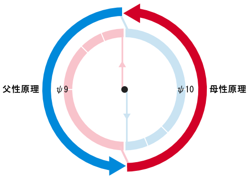
「ψ ９」も「ψ １０」も、ヌーソロジー的には『ノス（ＮＯＳ）』方向に転ぶこともあれば、『ノウス（ＮＯＯＳ）』方向に転ぶこともある。
元々は、 ψ ９（父性原理）は『ノウス』 の力、 ψ １０（母性原理）は『ノス』 の力を持っている。しかし、人間にとっては、それが逆方向の力へと向かう。 ψ ９（父性原理）が『ノス』方向に転べば『反定質』の方向性 になり、 ψ １０（母性原理）が『ノウス』方向に転べば『反性質』の方向性 になる。
つまり、この二元は、『反定質』と『反性質』の二元にも絡むようになる・・・ということである。
それから、日本は古来から「母性原理」が主流であったが、そこに「父性原理」を組みこむということは、一種の「両性具有」 を行く道ということになり、これは『シリウス』に向かう道だと言うこともできると思う。現代日本においては、日本が持っている本来の長所を活かしつつ、近代的で合理的な思想の良い所を上手く組み込むことによって、『シリウス』に向かうことができるのだと思う。
ユングの「元型」とヌーソロジーの『次元観察子』の関係 については、前にも軽く触れたが、ここは重要な所なので、詳しく説明しようと思う。
まず、ヌーソロジーの『次元観察子』は、「意識の位置から作られるもの」 という点が重要である。ここで、「意識の位置」と言われるものは、「無限遠点」 や「無時間」 の場所だったりする。それから、『次元観察子』の構造は、ヌーソロジー的には、「意識と光速度の関係」や「素粒子の仕組み」といったものとも対応している。このように、物理的に最初から存在する「構造」から出来上がっているものが『次元観察子』だと言っても良い。
対して、ユングの「元型」は、ユングの提唱したものであり、童話や神話などとも繋がりがある、いくらか「抽象的なもの」 である。この「抽象的なもの」が、人間の顕在意識で「イメージ」として認識された時、「原始心像」となるわけである。
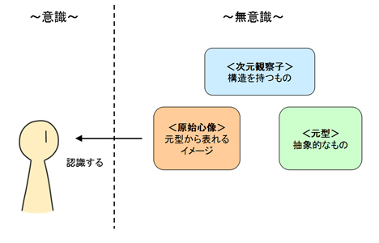
このように、「元型」と『次元観察子』は、厳密には違うものなわけであるが、しかし、ユングの提唱したものと、ヌーソロジーで言われているものとの二つの概念の中で、見解が一致している所を見出すことはできる。
それから、『次元観察子』は、明確な「構造」を持っているものであるため、『次元観察子』を理解した上で「元型」を捉えることで、「元型」の明確な構造が分かってくるようになる。さらには、そこから浮かび上がる「原始心像」の構造も分かるようになる。
このように、「抽象的なもの」の「構造」が分かるようになるのは、ヌーソロジーの長所とも言えることである。
ユングは、人間を２つのタイプに分けたり、４つのタイプに分けたりすることを提唱した人物としても有名である。この「人間のタイプ」については、フロイトと決別した後にユングが書いた『心理学的類型』という本に書かれている。
そのタイプ分けとは、まずは「内向タイプ」 と「外向タイプ」 の２つであり、加えて、「直観タイプ」「感情タイプ」「思考タイプ」「感覚タイプ」 の４つのタイプが存在する。それらが組み合わさることによって、２×４で、合計８つ のタイプが考えられる。
まずは、「タイプ分け」については、それを行う意義が重要な話となる。それは、単にタイプを「分類」するというよりも、４つのタイプを「座標軸」として設定することによって、本人の人格に接近しやすくなることを目的とするべきである。ここで、「分類」をした結果、ただの「レッテル張り」にしかならないようでは、「タイプ分け」には何も意味がないことになる。
思うに、このような分析で心がけるべきことは、「ＡであるかＢであるか」ではなく、「Ａに近いか、あるいは、Ｂにも近いか」 であったり、「それによって何が言えるか」 の方が大事である。そもそも、人間の心というものは、移り変わりやすいのが常であり、分別は微妙なものであるため、結果は「多様」なのが基本である。それから、精神分析においては「結局、どうすれば良いのか？」という、とりあえずの着地点を見いだすことが結果として必要になる。
こうしたことを踏まえつつ、ユングの言った「４つのタイプ」について取り上げようと思う。
まずは「２つのタイプ」の「内向タイプと外向タイプ」 についてである。（これは、『ヌーソロジー基本概要＋（プラス）』といった書籍や、『Raimuのヌーソロジー入門』でも説明しているが、ここでも同様に説明しようと思う。）
これは、簡単に説明すると「意識のベクトルが内側に向いているかと外側に向いているか」 によって起きる２つのタイプと言われている。言い換えるならば、無意識に向かっているか、外在への適応に向かっているか、と言うこともできる。ユングの「元型」でいうと、「シャドウ」や「こころ」が先手の傾向があるのが内向タイプで、「ペルソナ」先手の傾向があるのが外向タイプだとも言える。
それから、書籍『ユング心理学入門』からの引用だと、以下のように述べられている。
世の中には、ある場合に反応する際に、口には出さないけど「否」といっているかのように、まず少し身を引いて、そのあとでようやく反応するような一群のひとびとがあり、また、同じ場面において、自分の行動は明らかに正しいと確信しきって見え、ただちに進み出て反応してゆくような郡に属するひとびとがある。
前者はそれゆえ、 客体とのある種の消極的な関係によって、また、後者は客体との積極的な関係によって特徴づけられている。
・・・前者は内向的態度に対応し、後者は外向的態度に対応している。
こうした「内向タイプと外向タイプ」についても、先ほども述べたように「Ａに近いか、あるいは、Ｂにも近いか」という分析が妥当であり、状況によって変わることは、当然のようにあり得ることである。あるいは、どちらとも判断しづらい、ニュートラルのような人もいるだろうと思う。
こうした「内向タイプ」と「外向タイプ」について、自分なりにまとめてみると、以下のようになると思う。
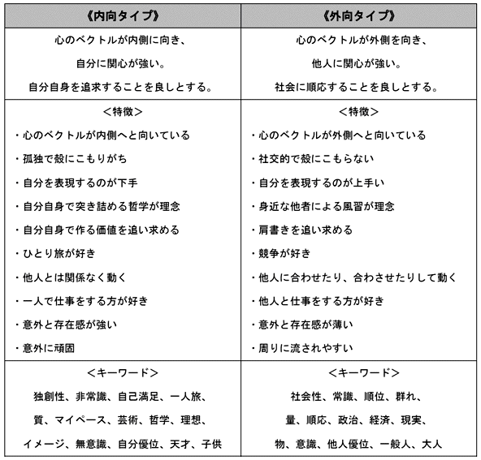
ヌーソロジー的には？
「内向タイプ」と「外向タイプ」は、ヌーソロジー的には何がいえるのだろうか？
まず、人間の自我は『次元観察子ψ １〜２』にあり、そこから、「ψ ３（主体）→ψ ５（自己）」に向かうベクトルを持っているのが「内向タイプ」 であり、一方で、「ψ ４（客体）→ψ ６（他者）」に向かうベクトルを持っているのが「外向タイプ」 である。
これは、人間にとって身近な『ノウス（ＮＯＯＳ）』と『ノス（ＮＯＳ）』にも該当している。実は、『ノウス』と『ノス』を簡単にイメージするのに適しているのが、この「内向タイプ」と「外向タイプ」の二つの傾向だったりする。
「内向タイプ」と「外向タイプ」は、「こころ」に従属する者 と、「ペルソナ」に従属する者 、という言い方でも当てはまるため、以下のように、ケイブコンパスにも当てはまる。
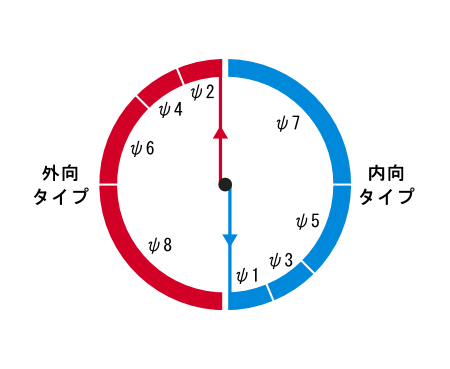
以上のように、「内向タイプ」と「外向タイプ」は、ヌーソロジーと縁が深い概念なのである。
さて、最近では、「リア充」 という言葉があったり、それから「オタク」 と言われ方をされる人達というのがいる。前者はおよそ「外向タイプ」、後者はおよそ「内向タイプ」に関係している。
「リア充」は「リアルが充実している人」 ということを意味する。リアルが充実してるということは「外在世界」が充実しているということであり、これはそのまま「外向タイプ」へと繋がるようになる。
一方で「オタク」は、今は「アニメとかゲームとか好きな人」みたいなっているが、本来は「一つの物事に異常に集中できる人」
のことを言う。「オタク」とは、アニメ業界で「オタキング」として有名な「岡田敏夫」によると、以下のように定義されるらしい。
・進化した視覚を持つ人間
・高性能のレファレンス能力を持つ人間
・飽くなき向上心と自己顕示欲
これは、ヌーソロジー的に言うと、新しい知覚を目指すような方向性という解釈することもできるし、「４次元空間」へと向かう志向性 と言うこともできる。（しかし、最近のオタクは、逆に「２次元空間」 の方向へと向かっている傾向がある。そこの所は、色々と考察できそうな所ではあるが・・・。「２次元空間」に向かうと、ある意味では『ノス』や外向的な要素に向かうことになるので、また事情が複雑になる。）
元々のオタクは、古代ギリシャで、哲学者プラトン が指し示したような、「イデア」 へと向かう哲学のような方向を持つものなのだと思う。（ちなみに、プラトンはレスリングをやっていた人物だったらしい。貧弱なイメージではないみたいである。）
そういう意味では、「オタク」は『ノウス』的であるし、「リア充」は『ノス』的なのである。
さて、次に「直観」「感情」「思考」「感覚」 に紐付く４つのタイプについてである。これらは、ユングによると「４つ心理機能」 と言われている。
それぞれをざっくりと説明すると以下のようになる。
〜直観タイプ〜
いわゆる「直観力」を駆使して、
可能性を見いだすのが得意なタイプ。
「ピンと来たもの」で行動するが、
完全な当てずっぽうではなく、何かしらの記憶の蓄積から、それが来るものと思われる。
割と理想主義に近いタイプとも言える。
〜感情タイプ〜
「心」や「感情」といったもので判断するタイプ。
感情で捉えることができるものに関心を持ち、
良いと感じるかそうでないかを重要視する。
〜思考タイプ〜
「頭」や「思考」といったもので判断するタイプ。
思考で捉えることができるものに関心を持ち、
理に適っているかそうでないかを重要視する。
〜感覚タイプ〜
実際に知覚した物事を重視して行動するタイプ。
知覚内容は「視覚」「聴覚」「触覚」などの総合的なものであり、
それらの経験に基づいた行動を行う。
割と現実主義に近いタイプとも言える。
これらの４つのタイプについては、色々と詳しいことが言えるし、これと「内向タイプ」と「外向タイプ」との複合によって、様々な性格が出来上がることになる。
それから、この４つのタイプの中で、「直観←→感覚」・「感情←→思考」 は、それぞれ対の関係になっているため、以下のように十字型の軸で表すことができる。
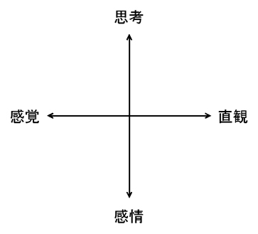
この十字型の軸の中で、「４つ心理機能」の特徴として見られることは、対となっている片方が優れている場合、もう片方が劣性機能になりやすい ことである。そして、そうした劣性機能は「無意識」に抑圧されやすくなるため、心理療法においても、この劣性機能の部分が重要なテーマとなる。
このように、「４つ心理機能」について見ていくことで、自身の意識に持っているものと、無意識に持っているものとのバランスについても見ていくことができる。このようなバランスを把握することが、タイプ論の本来の使い方である。
ヌーソロジー的には？
「直観と感覚」・「感情と思考」の４つの心理機能は、ヌーソロジーの『ケイブコンパス』に当てはめてみると、以下のようになる。
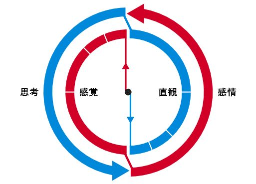
「思考」→『思形』 、「感情」→『感性』 との対応は、そのまま当てはまるものだと思う。それから、「直観と感覚」についてであるが、それぞれ、「直観」は『奇数系元止揚』 、「感覚」は『偶数系元止揚』 に当てはまる。『奇数系元止揚』は「精神世界」のようなもので、『偶数系元止揚』は「物質世界」のようなものである。従って、理想主義的な直観タイプと、現実主義的な感覚タイプのイメージが、そこで結びつくようになる。
それから、『思形』と『奇数系元止揚』との結びつき や、『感性』と『偶数系元止揚』との結びつき について、ここで着目したい。それらは、観察子構造としては繋がりを持っており、これは「思考と直観」「感情と感覚」が結びつく ことを意味している。
「思考」と「直観」の関係について言えることは、まず、「思考」機能に対応する『思形』が司っているのは「言語」であり、それに紐付く「思考体験」の場にあるのが「思考」機能だと言える。そして、その「思考体験」の積み重ねによって出てきたものが、人間が今いる場所に、瞬間的に降りてくるのが「直観」なのである。つまり、「直観」とは「思考の積み重ね」から瞬間的に起きるものであり、それを駆使するのが「直観タイプ」 だと言うことができる。「直観タイプ」の持つ瞬間的な「ひらめき」は、時間感覚のないような場から出てくるものであるため、どこか超越的な存在をそこにかいま見ることができる。
次に、「感情」と「感覚」の関係についてだが、「感情」機能に対応する『感性』は、「感覚」を司っている。そこで、純粋な「感覚の場」にあるのが「感情」機能だと言える。そして、そうした「感覚の積み重ね」から行動するタイプというのが「感覚タイプ」 だと言うことができる。こうした「感覚タイプ」の持つ「感覚の積み重ね」は、人間の持つ「時間感覚」に紐づいているものであり、「経験」と言うこともできる。従って、「感覚タイプ」とは、言い換えるならば、「経験タイプ」とも言えるのだと思う。
このように、ケイブコンパスに４つの心理機能を当てはめると、ユングがそれぞれ指していた４タイプと少し異なるようにもなるかもしれないが、ケイブコンパスのような全体論と４つのタイプとを合わせて捉えることで、より理解を深めることができるようになる。
４つの心理機能である「直観」「感情」「思考」「感覚」は、「西洋魔術」や「西洋占星術」における「火」「水」「風」「土」 という４大元素にも対応している。従って、ケイブコンパスでも、「火」「水」「風」「土」は、以下のように対応する。
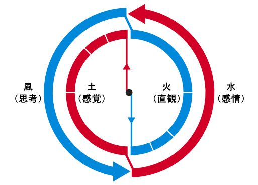
ヌーソロジーの概念と「火」「水」「風」「土」という４大元素との対応は、『負荷・反映・等化・中和』や『定質・性質・反性質・反定質』といった概念についても諸説あり、色々と言えるので定まってない所もあるが、この『火： 奇数系元止揚』『水： 感性』『風： 思形』『土： 偶数系元止揚』 という対応に関しては、かなり定まったものだと言えると思う。
人間の世界は、この４つの中で、『偶数系元止揚』に該当する「土」の要素だけが異常に強く、それは、ある種の絶対的な「父」のように君臨している。逆に、『奇数系元止揚』である「火」の要素は弱く、一部の芸術家やオカルティストといった人達が復興しようとしている所であるが、世間的には下火の扱いとなることが多いのである。
ケイブコンパスと４大元素とを絡めて捉えてみると、このようなアンバランス構造も見えてくるようになる。
これまで、「元型」や「タイプ論」について色々と述べていったが、最後に、ユング心理学にて取り扱われていた、「夢」「集合無意識」「シンクロニシティ」「コンプレックス」「カイロスとクロノス」「マナ人格」 といったことと、ヌーソロジーの絡みについて見ていこうと思う。
「夢」 は、人間が夜に見るものであり、ユングやフロイトが「夢分析」として心理療法に用いていたものである。
そもそも、人間が何故、夢を見るかについては、色々と諸説がある。起きていた時の記憶の整理や、神経疲労や脳細胞の回復などと色々あるだろうが、謎が多いものかもしれない。ユングなんかは、自分自身が不思議な夢を見たことがある体験があるから、人間の持っている無意識の謎の探求をしている所がある。
ユングやフロイトによる心理療法では、夢は「無意識に抑圧された感情や欲望が出る場」とされていたので、精神分析においてその内容が重要視された。
さて、筆者も、ユングに興味を持った人間として、「夢」については色々と調べたし、どんなものなのかを自分なりに考えた。そうした中で、筆者の見識としては、「夢」は、ただのストレス解消であるパターンと、無意識の奥底からのメッセージであるパターンとがあるのだと思う。後者の場合は、非常に印象深い感情が残るものである。
それから、自分が色々と調べた中で重要だと思ったのは、「夢」の世界においては「関係性」が大事 ということである。例えば、夢の中でＡという人物とＢという人物が出てきて、それで、ＡとＢは何かしらの知人であったり、知っているキャラクターだったり、分かりやすい職業の人物だったりするわけだが、そこで、ＡとＢの「姿」が何で、実際に「誰」であるかは、そこまで重要ではない。それよりも、「ＡとＢがどういう関係なのか」と、それから「自分とどういう関係なのか」の方が大事であり、そこからＡやＢはどういう「役割」のものを指しているのか？を考えると良い。
また、Ｘという事象が出てきた時、「それが何なのか？」という問いを出したとして、「○○である」という答えが出てきたとしても、恐らく、その「○○である」という答えはあまり重要ではない。・・・なんと言ったら良いだろうか・・・。「○○である」という答えを用意するということは、○○という「名前をつける」ようなものなのだが、そこで名前が付けられた「文字情報」ばかり追いかけることは、あまり重要ではない・・・ということである。
それよりも、その夢から印象を受け取った時、「どう感じたのか？」の方が大事であり、そこで受けた「感じ」が、「何だったのか？」に対する、ダイレクトな「答え」だったりするのである。そうした「感じ」から、夢を見ていて「気付くべきこと」が出てくるものである。
ユングが言っていたように、自分が見ている夢は、他の人も見ている夢・・・というか、その国の文化が持っている「何か」と関係していることもあるかもしれない。そうした場合も、自分の受けた「感じ」と、他の人の受けた「感じ」の「共感覚」を探る必要がある。その場合、「それがどういう名前でどういう姿をしているか。」よりも、「どういう感じのものか。」を着眼点のメインにして、探っていく必要がある。
こうした「夢」の内容は、見ている本人がどういう「文化」を受けて育ったかによって異なるものであるため、表象として見えた内容と、それが何を意味しているかは、人によって微妙に異なったりする。巷で出回っている「夢占い」のような本では、「○○が出てきた場合→○○を意味する。」というパターンが書いてあったりするのだが、それは使えないこともある。何故なら、個々人が持つ性格や経験によって、違いが出るからである。
夢分析を行う時は、そうしたことを考慮していく必要がある。
ヌーソロジー的には？
ヌーソロジー的には「夢」とは何なのだろうか？ これは、書籍『２０１３年： シリウス革命』に書かれていることだが、オコツトによる明確な回答がある。それは、まさしく「臨死体験」である らしい。
まるで、「夢」とは異世界に飛ぶようなものらしいが、ヌーソロジーにおいては、その異世界とは「死後の世界」だという。これは、ヌーソロジーで『人間の外面』と呼ばれている場所にも近く、『ケイブコンパス』で言うと、『次元観察子ψ ３』であったり、それ以降の『奇数系元止揚』の世界に入り込むことでもある。
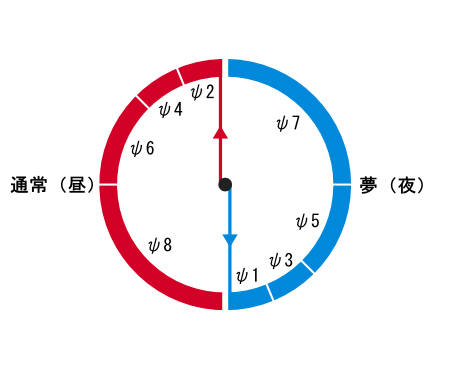
人間が「夢」を見るということは、一種の「純粋主観」の世界に入るということになるのだが、ヌーソロジー的には、この「純粋主観」の世界から「死後の世界」が始まるのである。それから、そこは「時間のない世界」となっている。
「集合無意識」 は「元型」の所でも説明した、ユングの重要概念である。書籍『ユング心理学入門』では「普遍的無意識」 と訳されている。
改めて説明すると、人間の無意識には、まず、「個人的無意識」があり、その奥には「集合無意識」がある。そして、集合無意識においては、他の人の無意識と、自分の無意識が繋がっているのである。
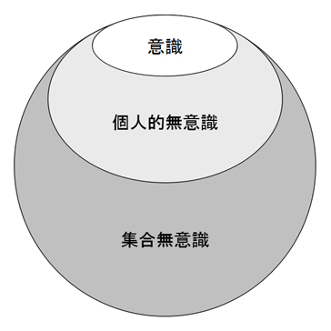
フロイトの解釈は「個人的無意識」までだったが、フロイトと決別したユングは、こうした「集合無意識」まで発想を広げるようになった。人間の無意識が他人と繋がっているということは、科学的に考えると滑稽なことであるため、これは、ユングが「オカルティスト」として扱われる所以でもある。
ユングは、様々な患者の夢を分析していく中で、異なる人物の夢の中に普遍的な所が見えて、それを「集合無意識」と名付けた。そこから、「集合無意識」にある、特徴的なモデルを「元型」と読んだわけである。それは、それぞれの文化が持つ、神話や童話や言い伝えの中にも見られるものであった。
ヌーソロジー的には？
ヌーソロジー的には、恐らく、「集合無意識」は、『シリウス』 が絡んでおり、『次元観察子』で言うと、『次元観察子ψ ７』以降 ・・・と解釈することができる。「神話」も、およそ『シリウス』や『大系観察子』から発している所があるので、そのように捉えても良いと思うが、「集合無意識」について、ユングの原書を読んでみると、それに限った話ではないらしい。
ユングの原書である『自我と無意識』を読む限りだと、「自分」と「他人」が一緒の無意識を持っている所に「集合無意識」がある様子である。・・・つまり、『次元観察子ψ ３』と『次元観察子ψ ４』（「主体」と「客体」）においても「集合無意識」があり、『次元観察子ψ ５』（自己）の段階でも「集合無意識」に入り込んでいる ・・・ということになる。
従って、「集合無意識」は、ヌーソロジー的には、「『等化』の際に必ず出てくるもの」 と解釈するのが良いだろうと思う。そして、観察子の構造から言うと、それには段階があり、『次元観察子ψ ３〜ψ ４』『次元観察子ψ ５〜ψ ６』『次元観察子ψ ７〜ψ ８』のような階層構造がある中で、それが起きてくる。
しかし、その中で一番重要なのは、「自己」と「他者」における「集合無意識」であるため、やはり、『次元観察子ψ ５』と『次元観察子ψ ６』の『等化』である、『次元観察子ψ ７』がキーポイントとなるのは確かである。
次は「コンプレックス」 についてである。これもユングが扱っていた概念であり、本来は「複合感情」 という意味を持っている。
「コンプレックス」は、「劣等感」という風に言われることもあるのだが、それは「劣等コンプレックス」を限定して指している。ユングが扱っていたものは、それとは異なるものである。
人間は、普段は「自我」を中心とした「心的複合体」を安定したものとして扱って、日常生活を過ごしている。しかし、そこで「自我の外」から何かの精神や感情が出てくるようになると、「心的複合体」の中で２つの感情がせめぎ合うようになり、「複合感情」という状態になる。これは、精神分析において、自身の「無意識」と向き合う時に必然的に出てくることであるため、そこで立ちはだかってくるものが「コンプレックス」である。
それは、「元型」の所で説明したように、「自我」に加えて「シャドウ」が出てきたり、「ペルソナ」と「アニマ」が同居したりするような状況のことを意味する。
そうした物事を乗り越えて、背反するものが同居しつつも、統合された「自己」を見つけるのが、ユングの言う「個性化」であるため、「コンプレックス」は「個性化」のために乗り越えるべきもの でもある。
ヌーソロジー的には？
ヌーソロジー的に「コンプレックス」は、『顕在化』をしていくにおいて、『次元観察子ψ １〜ψ ２』や『次元観察子ψ ψ ３〜ψ ４』に行くときに出てくる状態であり、自身の意識の中に『対化』を持っている状態 だと言うこともできる。無意識世界に参入する場合、まずは、『ψ ３』と『ψ ４』から始まる。
ヌーソロジー的には『対化』を見いだした後は、『等化』が必要になる。ヌーソロジーでは、『等化』とは「『負荷』と『反映』の対称性を見いだす回転の作用・・・」といった言い回しで説明されている。確かに構造的な見方から言うとそんな感じだが、精神的な見方から言うと、それはコンプレックスの問題の解決と同義 と言っても良い。
このように、ヌーソロジーの言い回しというのは独特なものであるが、実際にやっていくことは、ユングが言った「個性化」において必要なことと、ほぼ一緒だと捉えても良い。
ユングが言っていたことの中に「シンクロニシティ」 というものがある。「シンクロニシティ」とは、何らかの一致する出来事が、離れた場所などで同時に起こるということ。また、物理現象として説明できない状況で、何かが「一致」するということが起きた時に、「シンクロニシティ」という言葉が使われる。
これは、本来なら偶然で起こり得るようなことが、まるで必然のように起こるということでもある。
ユングは、科学では証明できないような超上的な体験をいくつかしている人物である。霊能力を持つ人と関わっていた時に、閉まってあったナイフが割れていたとか、フロイトと話している時に本棚からポルターガイストのように大きな音が２回も鳴ったとか、「第一次世界大戦」が起きる前にヨーロッパの大勢の人が死ぬようなヴィジョンを繰り返し見ていたとか・・・そういうエピソードが色々とある。心理学者という立場であるユングは、そういうものに対して「シンクロニシティ」として解釈していたわけである。
また、これは「集合無意識」との絡みもあり、「別々の人達が、同じような発想を持つ」ことも、一種の「シンクロニシティ」に該当する。それによって人が集まって、一つのムーブメントが起きるという、ヒッピー的な発想にも繋がる現象である。
ヌーソロジー的には？
ヌーソロジー的には「シンクロニシティ」とは何なのか？ これは、あまり難しく考えなくても良いかもしれない。
ヌーソロジーにおける『顕在化』は、自身の意識を「時間と空間の関係のない世界に接続する」 ということになり、そうなってくると、不思議なことが必然的に発生してくる ようになる。「精神」の世界にあるものが「物質」の世界に関与したり、その逆があったりと、そういうことが起きるものなのである。そうなってくると、「シンクロニシティ」が自然に起きてくるようになる。
特に、『次元観察子ψ ５』あたりになると、それなりの強度を持ってくるのではないか？と思う。「ψ ５」になると、意識と無意識との関係作りが「身体」を中心に起きるようになったり、共感覚や共時性の能力が強くなったりする。
「カイロス」 と「クロノス」 とは、ユング本人が言っていたものではないが、河合隼雄さんが言っていたものであり、書籍『ユング心理学入門』にある『自己実現における「時」』 という項目の所に書いてある。
「カイロス」は、簡単に言うと、自己実現において、突発的に起きてくるような「時」 のことを言っている。一方で、「クロノス」は、人間の世界に流れている、時計が刻む時間のような「時」 のことを言う。この両者の「時」を区別して考えることが大切であると、河合隼雄さんは提唱していた。
人間は普段、時間を守って生きている。例えば、学校へ行く時もそうだし、仕事をする時もそうである。「この時間にこれをやる」があらかじめ決まっていて、その規定の中で生きていることが多い。このように、生活していく上で守らなければいけない「時」が「クロノス」である。
しかし、そうした中で無意識からのメッセージや、今まで抑圧してきたトラブルが起きる時、それは突然やってくるものである。これは無意識にある「時」に即して出てくると言っても良いかもしれない。このように、クロノス的な時間感覚を破るように出てくるものが「カイロス」である。例えば、幼い子供の行動原理なんかもそれに近いものだと言うことができる。
普段は外向的に生きている人間は、「クロノス」という「時」に身をゆだねながら生きている。しかし、内向的なものに関心が向くようになり、ある種の問題に巻き込まれるようになると、「カイロス」という「時」を大切にしないと、自己実現の機会を失うことにもなる。そもそも、人間の身体は自然の産物であり、自然に発生する「カイロス」に従うという性質も持っているため、その問題は無視できないのである。
しかし、そこで「カイロス」ばかりを重視して、「クロノス」を軽視するようになると、今度は自身の「ペルソナ」が危機的な状況になることもある。
このように、自己実現において、人間はこうした「クロノス」と「カイロス」に板挟みになることがあるという問題が、重要になってくるのである。
ヌーソロジー的には？
「クロノス」と「カイロス」の問題は、「時間」をテーマにした問題であるが、ヌーソロジーにおいても「時間」というテーマはかなり主要な問題として出てくるものである。
ヌーソロジー的には、「クロノス」は「均質的な時間」 に該当する。「均質的な時間」とは、古典的な物理学で扱われる時間であり、「一定間隔で刻まれていて、全て同じ性質を持つ時間」という意味である。これは、デジタルの世界で流れる時間と言っても良い。
そして、「カイロス」は「持続的な時間」 というものに該当する。「持続」 とは、哲学者の「アンリ・ベルクソン」 という哲学者が提唱した時間の概念であり、「純粋持続」 とも呼ばれる。それは、簡単に説明すると「人間が感じる時間」であり、「内在的な時間」のことを言っている。「純粋持続」は、「全て均一の性質」ということはなく、その「質」は「生命」と結びついていて、変化していくものである。こうした不連続性をもつ「持続的な時間」は、突発的な時間として機能することもあり、そこで「カイロス」的な事象とも繋がってくるのではないか？と思う。
ヌーソロジー的には、「均質的な時間」は『偶数系観察子』において先手として働いており、「持続的な時間」は『奇数系観察子』において先手として働いている。
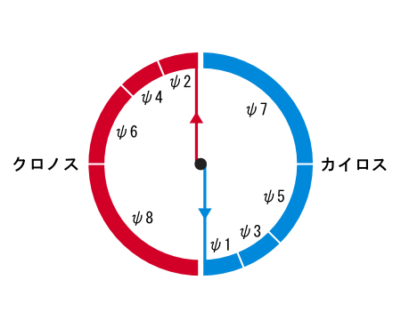
『奇数系観察子』は、時間が存在しない「無時間の世界」だとも言うことができるが、それは、「均質的な時間」が無いということであり、「持続的な時間」はあるということである。
それから、『次元観察子ψ １〜ψ ２』から、『次元観察子ψ ３』に向かうためには、まず、時間を「反転」させる必要があるが、これは、「均質的な時間」を「持続的な時間」に反転させること意味する。ヌーソロジー的な「無意識参入」は、そうした「反転」から始まる。
そして、「反転」した後は、『次元観察子ψ ３』側に「持続的な時間」があり、『次元観察子ψ ４』側に「均質的な時間」がある。ここで、二つの時間に板挟みされるようになるが、この二つが、それぞれ「カイロス」と「クロノス」に該当するというわけである。
「マナ人格」 は書籍『ユング心理学入門』には書いていない概念であり、ユングの原書である『自我と無意識』に書いてある概念である。割とマイナーな概念にあたると思う。
ユングによると、人間は「個性化」の課程で、「自我」は「アニマ・アニムス」の性質を取り込むようになる。特に、理性の強い者の場合は、「アニマ」を取り込むことになるのであるが・・・ユングによると、「アニマ」はオカルトな呪術的特性、即ち「マナ」 を持った存在であるという。
自我が「アニマ」を統合するようになると、アニマは「マナ」を失うようになる。そこで、自我が「マナ」を引き受けるようになる。そこで出来るのが「マナ人格」である。
ユングによると、「マナ人格」は、呪術的特性や精神エネルギーを持っていることに加え、魔術的な知識と力まで兼ね揃えているらしい。
このような強力な力を持った「マナ人格」は、同時に危険性も持ち合わせている。自我が「マナ」のエネルギーに取り込まれるようになり、逆に、自我の欲望の部分がマナを覆うような状況におちいることもある。その結果起きるのが、先ほども述べた「自我肥大」のような現象である。
つまり、「マナ人格」は「自己（Self）」にも似た存在であるのだが、精神的に未熟なままで、このような「アニマの力の取り込み」を行うと、「自己」の力の偉大さに負けてしまい、自我の持つ欲望が解消しきれずに自分を自己と同一視してしまうのと同様に、「自我肥大」の方向に向かってしまうのである。
ヌーソロジー的には？
「マナ人格」は、言い換えるならば、「アニマ（こころ）」の持つ特性を扱えるようになった「ペルソナ」的な自我を持つ者 だと言うことができるが、ヌーソロジー的に言うと、これはまさしく、「『奇数系観察子』が扱えるようになった人間」 ということだと思う。
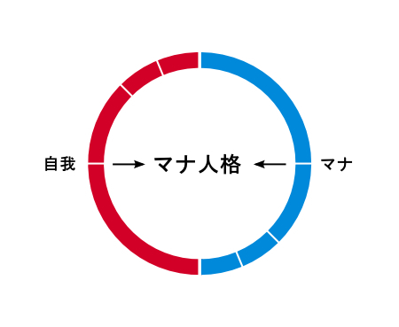
こうした「マナ人格」は、「自己（Self）」の元型にも近いもの である。「マナ人格」の中心となるのは、『次元観察子ψ ３〜ψ ４』を『等化』した『次元観察子ψ ５（自己）』のあたりだと思うが、やはりこれにも段階があり、それぞれ『ψ １〜ψ ２』『ψ ３〜ψ ４』『ψ ５〜ψ ６』『ψ ７〜ψ ８』の『等化』において、それぞれ出てくるものだと思う。
そうした中で、より高次元の段階に行くほど、より強力な「マナ人格」だと言うことができる。このような『奇数系観察子』の力を持つ人は、ヌーソロジーで言われていることとしては、ほとんど『変換人』 といっても良いと思うし、あるいは、「『シリウス』の力を持った人間」 と言っても良いと思う。
しかし、「マナ人格」には、「アニマ（こころ）」の力を取り込みながらも、自我的な意識が先手になるケースもある。
ヌーソロジーにおいても、『奇数系観察子』と『偶数系観察子』の双方が扱えるようになったとしても、そこで、『奇数』が先手になっているか、それとも、『偶数』が先手となっているかで方向性が異なることになるため、ユングが「マナ人格」において警告している「自我肥大」のような問題は、『変換人』にとっても注意するべき問題 である。
このあたりは、「精神」と「物質」の双方を扱う際に出てくる問題でもあるため、人間が『シリウス』に向かうムーブメントにおいて、新たに問題となる所である。
これから、ユングの師にもあたり、多くの心理学者や精神分析家にとって多大な影響を及ぼした「ジークムント・フロイト」 について述べていく。フロイトについては、精神分析学の中心人物ということで取り上げるものの、自分はそこまで詳しいという程ではないので、ここでは簡単に取り扱うことにしたい。
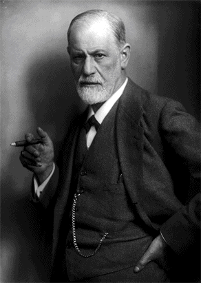
フロイトは１８５６年にオーストリアで生まれ、１９３９年に亡くなった、「ユダヤ人」である。フロイトの特徴としては、精神分析学の創始者としても有名だが、とにかく、人間の「性」の問題にこだわった人 としても有名である。フロイトが終始一つの物事にこだわり続けたのも、「ユダヤ人」という民族的な要因も恐らくあった。
精神科医としてヒステリー（神経症）の研究をしていたフロイトは、「シャルコー」という神経学者が催眠療法を使用している現場を見て、そこから催眠療法に興味を持って使っていくことになる。ヒステリーの原因を探るには、患者が抑圧した感情を探る他ないと考えたフロイトは、そこから「無意識」の研究に入るようになる。そうした中で、催眠療法は上手く行かないこともあり、試行錯誤の末、「自由連想法」を用いることになったりする。
それから、１８９６年に起きた父親の死をきっかけに、フロイトに転機が訪れることになる。最愛の父を失ったフロイトのショックは大きく、その影響で体調まで崩すようになるが、その後、フロイトは「近親相姦」の夢を見る ことになる。この衝撃が非常に大きかったが、フロイトは自身の夢を分析していくことにして、そこから「オイディプス・コンプレックス」 の着想を得るようになる。そこから、「幼児にも性欲がある」という「幼児性欲」 という発想も出てくるようになり、「性欲」をベースにするフロイト独自の考え方が出てくるようになる。
その後、フロイトは「性」というタブーを用いながら、持論を展開していくようになるが、その内容の滑稽さから、当時のヨーロッパでは大きく批判を浴びるようになる。そうした中でも、フロイトは、１９００年に「夢判断」 を刊行し、夢を用いた精神分析の治療法を確立させていき、「ウィーン精神分析協会」を創立する。そこから、アドラー やユング といった後の巨匠も集まるようになり、精神分析の界隈はそこから盛り上がるようにもなる。「国際精神分析協会」が設立されるようになり、ユングが会長に任命されることにもなった。
しかしながら、フロイトの言ったことは「人間のすべての悩みの原因は、性的なエネルギーから発している」といった主張であったため、アドラーやユングといった人物が、思想の違いから離れていくようになる。
フロイトが言及していた「性」の問題は、キリスト教が主流なヨーロッパではタブーな問題でもあったため、だからこそ逆にフロイトがそれに着目したのかもしれないが、それ故に批判もまぬがれなかったのである。
・・・と、以上のような批判を受けつつも、持論を展開していき、精神分析家として活動を続けていたのが、フロイトという人物である。
フロイトの活動は、ユングやアドラーといった人物や、ラカンといった人物にも影響を与えることになる。哲学の界隈にも影響を与えていて、ドゥルーズとガタリによる共著である『アンチ・オイディプス』 は、フロイトの「オイディプス・コンプレックス」に対して言及している。
このように、フロイトは、人間の「無意識」というジャンルに精神科医して初めて挑んだ、精神分析学の「父」のような人物なのである。
・・・ということで、フロイトの言った心理学の内容についてをここで簡単に説明し、ヌーソロジーの概念とも対応させていくことにする。しかし、フロイトの言った「性理論」の内容についてなどは、ヌーソロジーとの割り当てが難しいため飛ばすことにする。また、「オイディプス・コンプレックス」については、後の『オイディプス編』にて詳しく述べることにする。ここでは、「リビドー」、「自我」、「エス」、「超自我」、「エロス」、「タナトス」 といった概念について説明していく。
まずは、フロイトの中心概念と言っても良い、「リビドー」 についてである。
「リビドー」は、簡単な訳だと「性的欲望」 などと言われているが、「性的衝動を発動させる力」 とも言われているし、ユングによっては「全ての本能のエネルギー」 とも言われている。フロイト的には、それは「様々な欲求に変換可能」なエネルギーに該当する。
もし、患者がヒステリーなどの精神病をわずらっており、抑圧した感情を持っている場合、フロイトの場合は「幼児の頃から育んできたリビドーに原因がある。」という風に解釈しようとする。
このように「リビドー」とは、人間の「性欲」に絡んだものだが、フロイト的には「すべての人間の悩みの根本的な原因」にあたるのである。
ヌーソロジー的には？
思うに、フロイトの言う「リビドー」を、単に「人間の性的欲望」のように捉えると、語弊があるのかもしれない。
ここで、「人間」という枠を超えて「性欲」というものを突き詰めてみると、ありとあらゆる「二元性」 というものが絡んでくるようになる。特に重要なのは「父性」と「母性」 という「二元性」や、「自己」と「他者」 という「二元性」である。フロイトの言いたかった「根元的な力」とは、どちらかというと、そうした「根源的な二元性」 が絡んだものであったのかもしれない。
この点、後にラカンがフロイトの言っていたことを追うようになり、『対象ａ』という独自の概念を提唱し、それに向かう欲動があるということを言っていたが、そちらの方が「リビドー」の言わんとしていることに近いのかもしれない。（これについては『ラカン精神分析編』 にて、詳しく説明する。）
こうした力は、ヌーソロジー的には、『対化』を『等化』しようとしている力 に通じている。これは、人間の持つ欲望というより、「生命や魂の持つ欲動」である。こうしたものが、人間においては「性欲」という風に現れているが、それは本来の姿とは違うようになっている。
やはり、フロイトはユダヤ人であったこともあり、人類の持つ根元的な所に対して言及していたのかもしれない。
「性欲」が根源的な問題となって絡んでいる所は、おそらく『次元観察子』でいうと「ψ １１〜ψ １２」のあたりの話と関係している。「ψ １１〜ψ １２」は、ヌーソロジーでは『人間の定質と性質』と呼ばれているが、「ψ １１〜ψ １２」で閉じた世界における限界は、ユダヤ思想の限界にも通じているのである。
また、フロイトの言う「父」と「母」と「子」と「性欲」を巡る問題というのは、具体的な「両親」というより、「父性原理」と「母性原理」のような二元性と捉えてみるとどうなるだろうか？
そうすると、ヌーソロジーの「ケイブコンパス」における、『ノウス』と『ノス』の関係のあり方、もとい、「自己」と「他者」の関係の在り方から、あらゆる悩みが生じるという風に改めて解釈することができる。
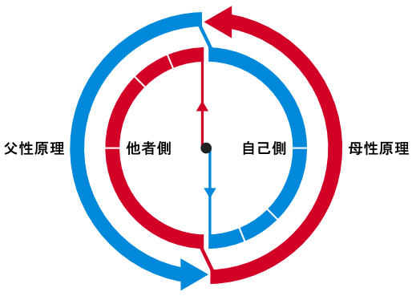
次に「自我」・「エス」・「超自我」 についてである。それぞれ「エゴ」・「イド」・「スーパーエゴ」 と呼ばれることもある。これらは、割と分かりやすい概念かもしれない。
まず、「自我」 は、特に説明することもないが、「我々が自分だと思っているもの」であり、我々が意識できるものである。基本的には、人間は自我や意識の力によって動いているが、たまに無意識の力によって衝動的に動くこともある。
次に、「エス」 は、ドイツ語で「それ」という意味らしいが、「無意識にあるもの」である。フロイト的には「リビドー」の生じる所 で、感情や欲求や衝動など、人間が制御し切れないものもここから出てくる。
それから、「超自我」 は、「エス」から生じるような衝動を押さえるためにある「規範」の意識である。この「規範」の意識は、人間が言語活動を行っていく上で形成されるようになる。人間が下手に「エス」に従って動いてしまうと、そこで反社会的な行動に移ってしまうため、「超自我」の意識が「自我」を統制して、真面目な人間として押さえ込む役割を持っている。
このような三つがある中、「自我」は、「エス」による衝動と、「超自我」による統制の影響を受けつつも、両者を揺れ動くように機能しているというのが、フロイトの述べた「精神構造」である。
ヌーソロジー的には？
ヌーソロジー的には、「自我」・「エス」・「超自我」は何にあたるのだろうか？ これは、二つほど解釈があるので、それぞれ述べていく。
〜解釈その１〜
以下は、『次元観察子』の「ψ １〜ψ ４」までを表した図である。
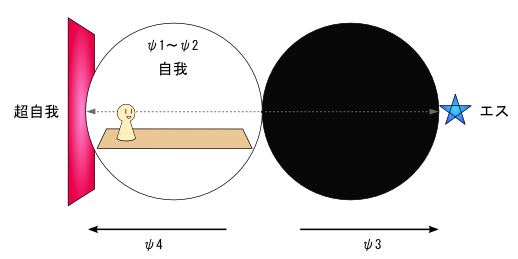
ここで、『次元観察子』の「ψ １〜ψ ２」の領域にあるものが「自我」 であり、 ψ ３以降の領域にあるものが「エス」 であり、 ψ ４以降の領域にあるものが「超自我」 である。「エス」と「超自我」は、より奥に進むと、それぞれ『奇数系元止揚』と『偶数系元止揚』に該当するだろうが、ひとまず始めに出てくるのは『ψ ３』と『ψ ４』である。『ψ ３』と『ψ ４』は、それぞれ、「主体」と「客体」にも関係している。
「エス」のようなψ ３以降の世界というものは、無意識の世界であるため、人によって出てくるイメージが違うものである。ユングの場合は、神話や童話の世界のようであり、ラカンの場合は、シュルレアリスムな世界観のようであった。そして、ユダヤ人でもあったフロイトにとっての「それ」は、ひたすら「性」の問題だったのかもしれない。だから、フロイトは「性」の問題にこだわり続けたのだと思う。
〜解釈その２〜
次に、以下は半田広宣さんが当てはめていたモデルである。
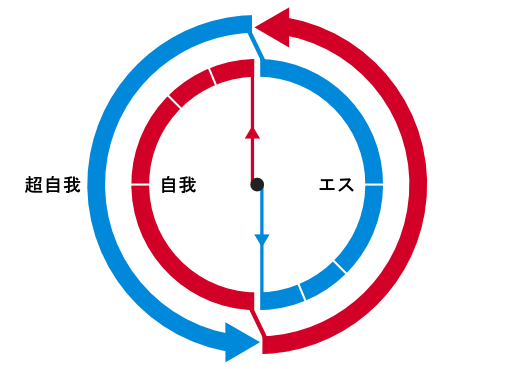
『ケイブコンパス』の中で、『偶数系元止揚』が「自我」 にあたり、『奇数系元止揚』が「エス」 にあたり、『偶数系元止揚』に被さる『思形』が「超自我」 になっている。
ここで、『偶数系元止揚』を「超自我」と解釈しても良さそうだが、『思形』は「言語」に該当するものであり、『偶数系元止揚』を背後で支える役割を持っているため、以上の解釈の場合、それを「超自我」と解釈しているということになる。
「エロス」 と「タナトス」 は、それぞれ「生の欲動」 と「死の欲動」 と言われるものである。これは、晩年のフロイトが着目した二つの概念であり、１９２０年に刊行された『快感原則の彼岸』でまとめられるようになる。
フロイトが生きていた当時は、１９１４〜１９１８年に「第一次世界大戦」が起きていたため、その時期から、フロイトは「死の欲動」というものについて考えていた様子であり、「エロス」と「タナトス」は、そうしたことから出てきた概念のようである。
フロイトによると、「エロス」とは、「生の欲動」であり、端的に言うと「生を統一し、保存しようとする欲動」 とされている。一方で「タナトス」とは、「死の欲動」であり、端的に言うと、「破壊し、殺害しようとする欲動」 とされている。この二つは対になって機能しており、片方の欲動だけが孤立した形で働くことはないとされている。
また、別の言い方をすると、人間は「リビドー」を持って生きているが、これはつまり「エロス（生の欲動）」である。しかし、人間はそうした「エロス」ばかりをさらけ出して生きているわけにはいかないため、それに対する逆の力である「タナトス（死の欲動）」を持ち、それを押さえ込む必要もある。人間は、こうした二つの欲動を持ち合わせているということである。
フロイトは、「タナトス」を第一次世界大戦での悲劇と結びつけ、戦争において、皆が「死」に向かっていることを、「タナトス」という「死の欲動」と絡めて考えるようになった。そこで、フロイトは『反復脅迫』 という概念を提唱するようになった。「反復脅迫」とは、「過去にあった状態を、ふたたび蘇らせたいとする欲動」であり、これは「エロス」にも「タナトス」にも起こるものとして言われている。ある状態が「タナトス」によって破壊されると、それを「エロス」によってまた作り出すことを望み、逆に、「エロス」によって生まれたものは、「タナトス」によってまた無機物に戻したいと望むようになる。フロイトの言う「反復脅迫」とは、そうした欲動である。
このように、晩年のフロイトは「エロス」と「タナトス」という二つの欲動に着目し、そうした二元論を自身の精神分析の理論にも組み込むことになる。
・・・と、以上が「エロス」と「タナトス」についての説明であるが、この二つはいくらか抽象的な概念でもあり難しいため、フロイトを語る人の中ではあまり言及されないこともある。しかし、晩年のフロイトが提唱した新しい二元論として、重要なものである。
ヌーソロジー的には？
晩年のフロイトは、人間の中にある「相反する二つの精神」に着目していたようで、「エロス」と「タナトス」という二つの概念による葛藤もそれだと思われるため、この二元論については、ヌーソロジー的にも非常に興味深いものである。
・・・しかし、これをヌーソロジーの概念に当てはめるのは、結構、難儀な所であった。そもそも、ここで言われている「生の欲動」と「死の欲動」は、「精神的な生と死」のことを言っているのか、それとも「肉体的な生と死」のことを言っているのかで、解釈が異なってくる。そもそも、フロイトの言った「タナトス」という概念自体、まだ未完成な印象を受ける。
ひとまず、ヌーソロジー的には、人間の意識が『次元観察子ψ １〜ψ ２』にあるとすると、『次元観察子ψ ４』側に自我の「生」 があり、『次元観察子ψ ３』側に自我の「死」 がある。
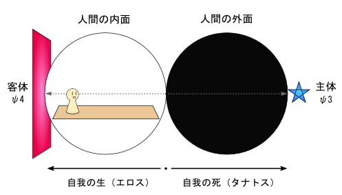
しかし、フロイトの言った「エロス」と「タナトス」は、それだけの問題ではなさそうである。
恐らく、「エロス」の根っこには、ヌーソロジー的には『性質』があり、それは『反性質』に転じる ことがある。『反性質』は自我の破壊という意味での「死」を求める一方で、魂のレベルでは能動的に生きることを渇望する。
一方で、「タナトス」の根っこには『定質』があり、それは『反定質』に転じる ことがある。『反定質』は自我の安定という意味での「生」を求める一方で、戦争などに向かうと死に向かうようになる。
『定質』『性質』『反定質』『反性質』の４つの概念は、以下の『タカヒマラ・テンプレート（２Ｄ版）』 で表される。
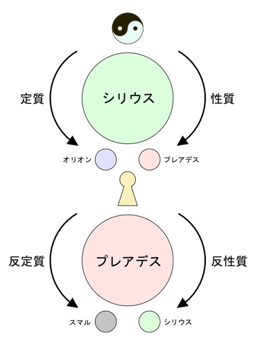
つまり、フロイトの言ったことは、この４つの力に通じているのではないか？と思う。
最後に、これはフロイトに限った話ではないが、精神分析において常に出てくる問題である、「転移」という現象 について述べておく。
精神分析の現場というものは、いわば、極限状態まで追い込まれた人間のいる現場である。そうした中で、悩みを持った患者と分析家の関係において、患者が、悩みの原因となる「何か」を、分析家に投影して、同一視する ことがあるらしい。これを「転移」 と言う。つまり、患者の「悩みの対象」が、分析家に「転移」されるということである。もし、性的な感情を転移した場合は、患者は分析家のことを好きになってしまう・・・フロイトはこのようなことを経験し、対応に戸惑った末に、「転移現象」を発見した。この「転移」は、精神分析全体に通じている問題なため、ユングやラカンといった人物もよく取り上げている問題である。
悩みの元となるものが、恋愛の対象であれば、それを分析家に転移し、憧れの対象であれば、それを分析家に転移し、怒りの対象であれば、それを分析家に転移し、憎しみの対象であれば、それを分析家に転移する・・・このように、様々なケースがあるのが「転移現象」である。
フロイトによると、「転移」には二種類のものがあり、分析家のことを好きになる転移を「陽性の感情転移」 とし、嫌いになる転移を「陰性の感情転移」 とした。そして、分析家は患者の性的な欲望の満足にはかかわらず、中立的な立場をまっとうすべきだとした。
このような「転移」現象は、精神分析の現場においては、かなり極端な現象として発生するものであるが、軽いレベルのものであれば、日常的にもよく発生するものでもあるため、そうしたものに注意して見てみると、見つかるものだと思う。
ヌーソロジー的には？
ヌーソロジー的には、「転移」とはどういうことになるのだろうか？ 恐らく、これは割と単純な話であり「過度な同一性」によって生じるもの だと思う。
『同一性』 とは、ヌーソロジーで使われている哲学用語だが、それは「何かと何かを同一視してしまう性質」 のことを言っている。これは、ヌーソロジー的には『中和』側の力 を持っていて、『中和』や『付帯質』といった『ノス（ＮＯＳ）』の力と相乗効果を生む ものである。
精神分析において、無意識のドロドロした世界に入り込んでいくということは・・・本来は『等化』側の世界（『奇数系観察子』の世界）に入り込んでいくことになるわけだが・・・そうした世界への入り方が強引であると、その反動のように『中和』側の作用が過剰に出てくる こともある。その過剰な『中和』の力によって出てくるものが、過剰な「同一視」であり、その結果出てくるものが「転移」という現象なのではないか？と思う。
人間は感情的になると、ましてや、ヒステリーの勢いになると、過剰な「同一視」の性質が働くようになるため、過剰な「転移」が発生するというわけである。冷静になると少しは「差異」が分かるようになるので、「転移」が発生した人に対しては、まずは、落ち着かせることが先決であると思う。後は、いつも通りに悩みの根本を探っていくしかない・・・のだと思う。
これまでに述べたユング・フロイトの用語と、ヌーソロジー用語との対応をまとめると、以下のようになる。
〜元型論関連〜
---『元型』---
人類同士が共通して持っている無意識の「型」。
本性は「集合無意識」にあり、
夢において「原始心像」として現れて出てくる。
ヌーソロジーの『次元観察子』も「元型」として解釈できるが、
これは「具体的な構造を持つもの」として、素粒子の構造などと関係がある。
『大系観察子』はそれよりも抽象的なもの。
---『シャドウ』---
簡単に言うと「普段の自分があまり向き合っていない自分」。
ヌーソロジー的には、『次元観察子ψ １〜ψ ２』から『人間の外面』に向かう時、
いくらか出てくるものだと解釈することができる。
「自我」から見た『次元観察子ψ ３』にあるものとも言える。
「シャドウ」の本性が分かってくると、「こころ（Soul）」が見えてくるようになる。
---『ペルソナ』---
「仮面」という意味。
簡単に言うと「外的環境に適応した自分」。
ヌーソロジー的には、『偶数系元止揚ψ ２〜８』にあるもの。
階層構造があるものと解釈できる。
『次元観察子ψ ３〜ψ ４』においてはψ ４にあたる。
---『こころ（Soul）』---
元の言葉は「Seele（魂）」。
簡単に言うと「自分自身が内的に持っているもの」。
ヌーソロジー的には、『奇数系元止揚ψ １〜７』にあるもの。
「ペルソナ」と同じく階層構造があるものと解釈できる。
『次元観察子ψ ３〜ψ ４』においてはψ ３にあたり、
「シャドウ」に近いものとして認識される。
---『アニマ・アニムス』---
人間を無意識の世界へ引き連れる「女性像」と「男性像」。
「こころ」とほぼ同様のものであり、
「こころ」が夢の中で異性として認識されると「アニマ」と「アニムス」になる。
ヌーソロジー的にも「こころ」とほぼ同じ意味で『奇数系元止揚ψ １〜７』にあるもの。
それから、それぞれ『感性』と『思形』とも関係があると思われる。
---『自己（Self）』---
人間が持つ「自我」や「無意識」を含めた
「高次の全体性」において、その中心にあるもの。
ヌーソロジー的には『次元観察子ψ ３〜ψ ４』を『等化』した
『次元観察子ψ ５』にある「自己」が、ほぼそれと一致する。
---『トリックスター』---
神話や童話において、既存の法を引っかき回す、いたずら好きの者。
ヌーソロジー的には、恐らく『プレアデス』的なものか、
あるいは、『性質』と『反性質』の二面性を持つ、ルシフェル的なものにあたる。
---『大母（グレートマザー）』---
夢の中に出てくる、偉大な「母なるもの」のイメージ。
ヌーソロジー的には『大系観察子Ω １０（感性）』と関係がある。
あるいは、『プレアデス』に近いもの。
---『老賢者』---
夢の中に出てくる、偉大な「父なるもの」のイメージ。
ヌーソロジー的には『大系観察子Ω ９（思形）』と関係がある。
あるいは、『オリオン』に近いもの。
---『父性原理と母性原理』---
ユングが提唱した概念というよりか、
河合隼雄氏が追求した概念。
それぞれ、ヌーソロジーにおいて、
『思形（ψ ９,Ω ９）』と『感性（ψ １０,Ω １０）』に関係がある。
元々は、『思形（父性原理）』は『ノウス』の力、『感性（母性原理）』は『ノス』の力を持っているが、
人間にとっては、それが逆方向の力へと向かうことがあり、
父性原理が『反定質』に転じると、『ノス』の方向性になり、
母性原理が『反性質』に転じると、『ノウス』の方向性になる。
〜タイプ論関連〜
---『内向タイプ・外向タイプ』---
意識のベクトルが内側に向いているものと、外側に向いているもの。
ヌーソロジー的には、『次元観察子ψ １〜ψ ２』にある自我が
「ψ ３（主体）→ψ ５（自己）」へと向く方向と、
「ψ ４（客体）→ψ ６（他者）」へと向く方向と解釈することができる。
「こころ」に従属する者と、「ペルソナ」に従属する者でもある。
それぞれ『ノウス』と『ノス』のイメージにも近い。
---『直観タイプ』---
いわゆる「直観力」を重視して行動するタイプ。
４大元素では「火」にあたる。
ケイブコンパスにおいては『奇数系元止揚』に対応する。
---『感情タイプ』---
「心」や「感情」といったもので判断するタイプ。
４大元素では「水」にあたる。
ケイブコンパスにおいては『感性』に対応する。
---『思考タイプ』---
「頭」や「思考」といったもので判断するタイプ。
４大元素では「風」にあたる。
ケイブコンパスにおいては『思形』に対応する。
---『感覚タイプ』---
実際に知覚した物事や、その経験を重視して行動するタイプ。
「経験タイプ」と言い換えても良い。
４大元素では「土」にあたる。
ケイブコンパスにおいては『偶数系元止揚』に対応する。
〜その他関連〜
---『夢』---
人間が寝る時に見るものであり、
精神分析においては、抑圧された精神が出てくる場なため、分析の対象となる。
オコツトが言うには、人間の「夢」は死後の世界であり、時間の無い空間。
夢の世界に行くことは『人間の外面』や『奇数系観察子』の世界に旅立つことになる。
---『集合無意識』---
「個人的無意識」の奥にある、自分と他人とが無意識同士で繋がっている領域。
ヌーソロジー的には、ψ ３〜ψ ４、ψ ５〜ψ ６と、『等化』していくポイントに、
それぞれ集合無意識のように繋がるポイントがあると解釈することができる。
本格的に入り込むのは『自己』と『他者』の『等化』である、
『次元観察子ψ ７』が重要なポイントとなる。
『シリウス』の領域とも解釈できる。
---『コンプレックス』---
「複合感情」という意味。
ヌーソロジー的には、自身の意識の中に『対化』を持っている状態と言える。
無意識世界に参入する場合、『ψ ３』と『ψ ４』から始まる。
---『カイロスとクロノス』---
ユングが提唱した概念というより、
河合隼雄氏が追求した概念。
「カイロス」は突発的に生じる「時」であり、主観的な時間でもある。
「クロノス」は時計が刻む時間のような「時」のことを言う。
「カイロス」は『奇数系観察子』において先手となり、「クロノス」は『偶数系観察子』において先手となる。
---『マナ人格』---
「アニマ・アニムス」の性質を取り込んだ「自我」。
ヌーソロジー的には、『奇数系観察子』の力を取り込んだ『偶数系観察子』の意識になる。
『シリウス』の力を得た人間と解釈することができ、恐らく、『変換人』にも近い。
『偶数系観察子』が先手になって暴走することもある。
〜フロイト関連〜
---『リビドー』---
「性的欲望」や「性的衝動を発動させる力」。
それから、「全ての本能のエネルギー」とも言われる。
ヌーソロジー的には「父性・母性」や「自己・他者」といった、
「根源的な二元性」と関係があると解釈することができる。
---『自我』---
我々が普段、自分だと思っているもの。
ヌーソロジー的には、『次元観察子ψ １〜ψ ２』の領域にあるもの。
または、『偶数系元止揚』に対応するもの。
---『エス』---
ドイツ語で「それ」という意味。
無意識にあるもの。
ヌーソロジー的には、ψ ３以降の領域にあるもの。
または、『奇数系元止揚』に対応するもの。
---『超自我』---
「エス」から生じるような衝動を押さえるためにある「規範」の意識。
ヌーソロジー的には、ψ ４以降の領域にあるもの。
または、『思形』に対応するもの。
---『エロスとタナトス』---
晩年のフロイトが提唱したものであり、
それぞれ、「生の欲動」と「死の欲動」の意味を持つ。
ヌーソロジー的には、恐らくψ ４に向かうものが「エロス」であり、
ψ ３に向かうものが「タナトス」である。
あるいは、『性質』・『反性質』・『定質』・『反定質』と関係があり、
『性質』・『反性質』が「エロス」にあたり、
『定質』・『反定質』が「タナトス」にあたる。
---『転移』---
患者の悩みの原因となる「何か」が、分析家に投影されて、同一視されるようになること。
『等化』側の世界に強引に入り込むことによって、
その反動のように『中和』側の作用が過剰に出てくることがあるが、
それによる「過度な同一性」によって生じるものだと思われる。
さて、この本のメインテーマは「精神分析」であり、一応は「精神病」についてが絡んだ本でもある。そこで、ここから話を少し脱線して「うつ病」 について軽く述べていくことにする。
・・・・とは言ったものの、筆者自身、医者のお世話になるほどの本格的なうつ病にかかったことがあるわけではなく、ましてや、「医者」というわけではない。これについては、ヌーソロジーとの絡みを少し踏まえつつ、本当に軽く触れることにするので、その点はご了承願いたい。
まず、うつ病に関しては、自分の知見なんかよりも、良い本を探せばあるだろうと思う。自分が知っているものとして『私はウコンでうつを治した！』（小菅正規著、宝島社新書） という本があるのだが、これが良かった、と思う。タイトルはふざけているようでも、この本の著者はうつ病の発症の経験がありながらにして医者でもあるため、医学的に詳しい内容が書かれていながらも、患者視点の内容もしっかりと書かれている本である。
この著書はタイトルのように、「ウコン（鬱金）」 でうつを治した人が書いた本である。それから、ここで言う「ウコン」とは、中国医学で漢方としても使われることもある、由緒正しき、薬用食材である。ここで、「漢方食材」を用いるという「東洋的治療法」 によって治したという所がポイントだと思う。やはり、うつ病の問題は、西洋思想と東洋思想の関係というフレームで考えると、過度な西洋思想によって起きている側面もあり、そうした中では、ユングのように東洋の産物に救いを求める姿勢も妥当なのだと思う。
それから、この著書は「ウコンを食べればうつが治る。」と言っているのではなく、「私はウコンでうつを治した！」と言っている所もポイントである。（薬事法に触れるという問題もあるだろうが・・・） そもそも、「うつ病」といった精神病に対して、何が効果的かどうかは、人それぞれであるだろうと思う。
その他、この本はウコンについてだけでなく、著者自信がうつ病にかかり、薬の副作用に苦しんだ経験をしたことについてや、治療をするにあたって悩んだ出来事や、うつ病の薬の種類や、良い精神科医の選び方など、有用なことが色々と書いてある。
従って、その辺りの詳しい内容については、先の本を参照して欲しい。
さて、うつ病治療に関する簡単な話であるが、一般的なうつ病治療の方法は、「休養」「薬物療法」「精神療法」・・・といったものが挙げられる。
筆者は医者ではないけど、うつ病の治療方法を自分なりに分析してみると、それは「身体調整」と「意識調整」 の二つに分けられるのではないか？と思う。
「身体調整」 は、「休養」や「薬物療法」といったものが該当する。これは、内蔵や肉体にある失陥を治すのと同じ要領で、もし「身体」が不調になっている所があれば、時間をかけて治すということを行ったり、必要に応じて「薬物療法」を行うということになると思う。
次に「意識調整」 は、様々な種類の「精神療法」がこれに該当する。これは、うつ病に限った問題ではないが、「意識」や「精神」の不調というのは、本人の「生き方」に関わった問題であるため、そこから様々な原因が考えられるし、治し方は多様である。
このように、「身体調整」と「意識調整」に分けて考えてみると、ヌーソロジーのケイブコンパスにも当てはめて解釈することができる。
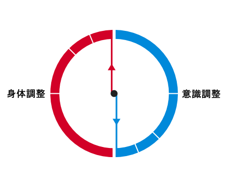
「身体調整」は、「物質」である「肉体」を調製して治す部分にあたり、「意識調整」は、「無意識」にも繋がった「精神」を調製して治す部分にあたる。それぞれ『偶数系元止揚』と『奇数系元止揚』に対応するわけである。
ひとまず、ここで言いたいことは、うつ病の治療方法として、「身体調整」と「意識調整」というフレームを使って捉えると、多種多様な方法論が考えられると思うので、その中で自分に合ったものを探すと良いのではないか？ということである。
先の『私はウコンでうつを治した！』という著書を参照すると、この本の著者は、様々なうつ病の治療法を試しつつも、それなりに回復するようになっていくわけだが、そこで、うつ病を治した主柱となる二つは、「ウコン」という食材と、それから、沖縄にある「てえげえ主義」 という考え方であったらしい。
まず、「ウコン」は、東洋の漢方でも使われている食材であり、漢方は中国医学で『気・血・水』と呼ばれるものを扱う独自の理論から成り立つものであるが、先の著者にとって、「身体調整」ができる食材として一番合っていたのが「ウコン」 だったのだと思う。それから、中国医学の世界は奥が深く、それぞれの人の体質によって合う食材というのが違うので、その人に合ったものを処方するという考え方を持つ。（ちなみに、筆者（来夢）に合った食材は「ショウガ（生姜）」なので、すり下ろしを冷蔵庫に入れて保存し、紅茶やジャスミンティーに入れて、ほぼ毎朝・毎日飲んで生活している。）
次に、先の著者の話の中に出てくるのは「てえげえ主義」 である。「てえげえ主義」とは、琉球古来よりあるらしい、沖縄にある行動様式で、簡単に説明するならば、細かいことにあまりこだわらない、いや、こだわっていけない ・・・みたいなもので、住んでいる人がみんな「いい加減」な感じであるが、それでも上手く言っているのが、沖縄という場所らしい。それから、沖縄には「オキナワタイム」 という価値観もあり、そこでは、とにかく時間の流れがゆっくりしているらしい。待ち合わせをしても時間通りに来なかったり、時間通りに行くことよりもおしゃれに気をくばったりと、沖縄全体では、それが暗黙の了解として普通であるため、皆、腹を立てることが無いという。以上のような考え方から成り立つのが「てえげえ主義」というものらしいが、どんなものかなんとなく分かっただろうか？
そもそも、うつ病を発症するような人というのは、生真面目で、貴重面で、目標や計画を立てて行動するような人が多いらしい。しかし、沖縄の発想に感銘を受けた先の著者は「適当にやってもなんとかなる。」という考え方を、リハビリをしながら生活に取り入れるようになり、上手くいくようになった様子である。このように、「てえげえ主義」や「オキナワタイム」の取り入れたことが、先の著者にとっての「意識調整」にあたるのではないか？と思う。
そして、こうした「意識調整」においても、沖縄の伝統という「東洋思想」 が出てくる。やはり、このようにゆったりとした思想が、過剰に厳格となった西洋思想に対して、必要になってくるのだと思う。
このように、「てえげえ主義」や「オキナワタイム」は、社会的な規定や時間に対して割とルーズになるという考え方であるが、これは、ユング心理学における「カイロス」重視の考え方を連想させるため、そうしたことにも通じている。（あくまで、社会的な仕事もそれなりにできるという上で、こうした考え方に則るべきだと思うが・・・）
このように、「身体調整」と「意識調整」という二つの軸を使って、うつ病や精神病について考えてみると良いかもしれない。
さて、筆者自身は、本格的なうつ病といったものにかかったことはないものの、ＩＴ企業のプログラマーとして、激務を乗り越えた経験ぐらいはある。正直な所、自分が経験したピーク時の忙しさも「せいぜい上の下ぐらいだろう。」というような、上には上がいるという激務のある業界であるが・・・まぁ、そうした経験から、語れることだけ語ってみようと思う。
まず、自分はどんなに忙しい時でも、睡眠時間は６〜７時間ぐらいは確保することが多かった。残業をしつつ作業をするとしても、それはギリギリ確保するなり、また、確保できない日があったとしても、ペース配分を考えて、平日のどこかで確保するようにしていた。結局、睡眠時間を削ると、作業が進まないものであり、プログラマーという仕事はどんなに忙しいといっても、結局、頭を動かして作業を順調に進めることが一番重要な仕事であったため、そのあたりのペースを考えながら仕事していた。あと、土日にしっかりと休むことも重要であり、二日分の休みがないと、次の週の平日も順調に乗り切れるものではないと思っていた。
しかし、ある時のピーク時は、その睡眠時間の確保が６時間を切るようなことが続いていた。加えて、３週連続での休日出勤といったことが出てくるようになってきた。それでも、納期までにやるべき作業を済ますために、なんとか頭を稼働させておくことを強いられる状況であった。
（以上の労働時間だけ見て「それぐらいの量は大したことない」と言う人も中にはいるかもしれないが、それは仕事の内容と本人の意志と能力によって辛さは違うため、厳しい人によってはやはり厳しいものだと思う。）
そういうことがあったとき、何か「ちょっとヤバい」という感覚が起きるようになってきた。その時に、どの部分の疲弊が一番致命的に感じていたかというと、やはり「神経」だった。頭の部分の神経しかり、手足の部分の神経しかり、ちょっと下手するとおかしくなりそうな感覚があった。「神経」がここまで疲弊するということは、今まで経験が無かったため、ちょっとした生命的な危機感というのをその時にいくらか感じた。最後の砦として、そこだけは疲弊しないように今までやってきたが、その最後の砦が崩れそうになったような気がした。
自分は体質的には、割と身体の不調には敏感な方であり、身体のどこが疲弊しているか、恐らく普通の人なら無意識化しているであろう所でも分かるタイプだったため、そこで「回避」することができた。（ちなみに自分は、体重は約50 Ｋｇ弱という、軽量級の痩せ型の身体である。） そうして「ヤバい」と感じた時は、ペースを落とすなり、疲れを訴えるなりして、とりあえず仕事の方はなんとかなったのだが・・・相当危ない気がしたのでもう経験したくはないと思った・・・
さて、以上の経験から、日常業務を順調にこなしていく上で重要なことは、やはり「睡眠」による「神経回復」だと思った。
恐らく、「睡眠」というものは「神経」を回復するのに一番優れた手段であり、「神経」とは、人間の「意識」や「精神」、それと「肉体」との接続機能を持っている、かなり重要な器官なのだと思う。
それから、「睡眠」は、ヌーソロジー的には、『偶数系観察子（物質側）』に対して『奇数系観察子（精神側）』のエネルギーを補給する行為でもある。人間は、起きている時は社会生活を営み、「物質側」を充実させるが、寝ている時は「精神側」を充実させている。
そして、その「睡眠」の部分がおろそかになると、いよいよ本格的にバランスが崩れることになる・・・のだと思う。社会全体がそうなっている場合は、やはり、社会全体がおかしいということであり、社会問題の話にも繋がってくる。
だから自分は、睡眠時間は７時間ぐらいは確保しておきたいし、土日は休んで休息もじっくりとることにする。そうした中でも、それ以外は残業はしているし、仕事に没頭するハメにはなるため、睡眠を確保した上で、仕事をしっかりやることにはなる。あとは賢く善処していく他ないだろうと思う。
しかし、やっていることの方向性が間違っている場合（根本的に向いていない仕事の場合など）はどうにもならないだろうと思うので、そこから考え直していく必要があると思う。
こうした問題は、人それぞれの生き方の問題も絡んでいるため、それぞれ多種多様なケースが考えられると思うが、ひとまず、自分が語れることは、ここまでである。
参考文献
・『ユング心理学入門---〝心理療法〟コレクション〈１〉』(2009)： 河合 隼雄 (著), 河合 俊雄 (編集)： 岩波書店
・『自我と無意識』(1995)： C.G. ユング (著), 松代 洋一 (翻訳), 渡辺 学 (翻訳)： 第三文明社
・『マンガ ユング深層心理学入門』(1997)： 石田 おさむ： 講談社
・『子どもと学校』(1992)： 河合 隼雄 (著)： 岩波書店
・『ユング自伝 １---思い出・夢・思想』(1972)： カール・グスタフ・ユング (著), アニエラ・ヤッフェ (編集), 河合 隼雄 (翻訳), & ２ その他： みすず書房
・『ユング自伝 ２---思い出・夢・思想』(1973)： カール・グスタフ・ユング (著), アニエラ・ヤッフェ (編集), 河合 隼雄 (翻訳), & ２ その他： みすず書房
・『元型論』(1999)： C.G. ユング (著), Carl Gustav Jung (原著), 林 道義 (翻訳)： 紀伊國屋書店; 増補改訂版
・『フロイトの精神分析 (図解雑学-絵と文章でわかりやすい!)』(2004)： 鈴木 晶 (著)： ナツメ社
・『フロイト思想を読む---無意識の哲学 (NHKブックス)』(2008)： 竹田 青嗣 (著), 山竹 伸二 (著)： 日本放送出版協会
・『人はなぜ戦争をするのか エロスとタナトス』(2008)： フロイト (著), 中山 元 (翻訳)： 光文社
・『私はウコンでうつを治した!』(2004)： 小菅 正規 (著)： 宝島社
・『2013:シリウス革命---精神世界、ニューサイエンスを超えた21 世紀の宇宙論(コスモロジー)』(1999)： 半田 広宣 (著)： たま出版
・『2013:人類が神を見る日 アドバンスト・エディション (超知ライブラリー サイエンス)』(2008)： 半田 広宣 (著)： 徳間書店; 再版
筆者ブログ
哲学思考のなれのはて：
http://tetugakunarehate.cocolog-nifty.com/
ＭＡＩＬ
tongpoo12yo@gmail.com
●本書に関するご感想などをお待ちしております。